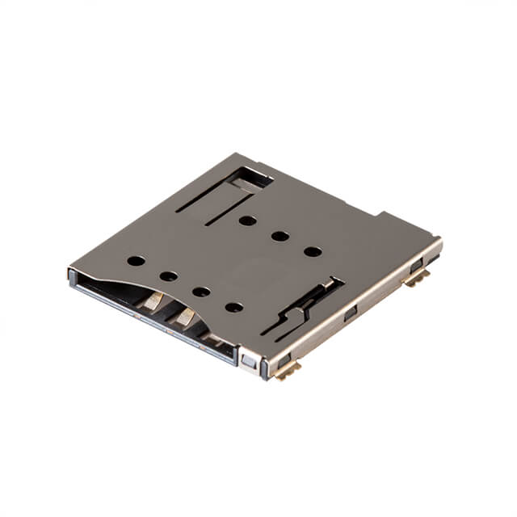
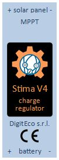
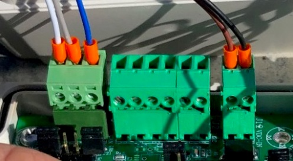
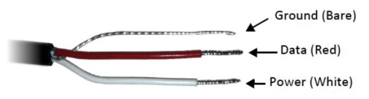
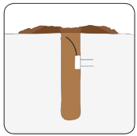
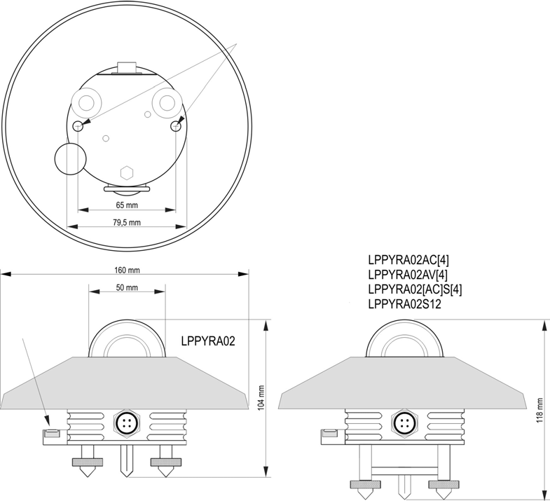
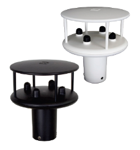
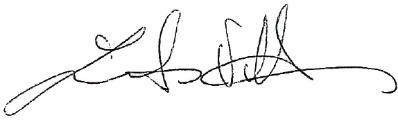
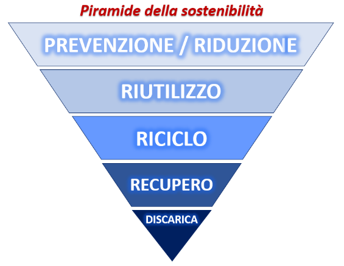
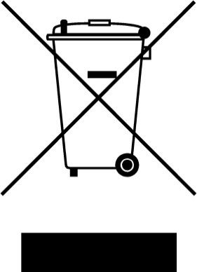

Manuale¶
|C:\Users\Giorgio\Dati applicazioni\Desktop\Elenco STIMA 4\Nuova immagine.jpg|
Fornitura e installazione di stazioni agrometeorologiche di base e stazioni agrometeorologiche complesse
Gara di appalto
CIG 8803247D3A – CUP J49J210005160002
“STAZIONE STIMA V4”
MANUALE D’USO E MANUTENZIONE
SOMMARIO¶
Manuale d’uso e manutenzione della “STAZIONE STIMA V4” 1
Ambito di applicazione del presente Manuale 2
Documentazione a corredo 3
Conservazione della documentazione 4
Avvertenze importanti per la sicurezza 4
Destinazione d’uso 4
Raccomandazioni relative alla sicurezza 4
Immagazzinamento 5
Smaltimento 6
Utilizzo conforme 6
Personale tecnico abilitato 7
Identificazione del prodotto 7
Codifica del prodotto 8
Procedura per la corretta accensione 9
Avvio del funzionamento in automatico 9
STAZIONE STIMA V4, componenti e collegamenti 11
Modulo STIMA V4 MASTER, datalogger. 13
Funzionalità software 20
Modulo “MODEM 2G/4G”. 22
Modulo Display e Encoder 25
Funzionalità e informazioni su Display 25
Schermata associata agli SLAVE 28
CAN-bus di comunicazione 31
Autodiagnostica 31
Modulo MPPT o Power 33
Alimentazione autonoma con pannello solare e batteria in tampone. 38
Pannello solare della stazione STIMA V4 38
Batteria in tampone della stazione STIMA V4 39
Modularità e collegamento dei moduli MASTER e MPPT con CAN-bus 42
Connessioni con cavi e connettori 51
Moduli “STIMA V4 SLAVE”, interfacce sensori 53
Ricovero dei moduli SLAVE 53
Descrizione del Modulo “SLAVE” 57
Modulo “STIMA V4 SLAVE”, collegamenti e funzionalità comuni 62
Modulo “STIMA V4 SLAVE”, TH 67
Modulo “STIMA V4 SLAVE”, RAIN 68
Modulo “STIMA V4 SLAVE”, RADIATION 71
Modulo “STIMA V4 SLAVE”, WIND 72
Modulo “STIMA V4 SLAVE”, SOIL MOISTURE 73
Sensore termoigrometrico THST4 76
Scheda tecnica del sensore THST4 78
Caratteristiche dello schermo antiradiazione 83
Facilità e rapidità di ispezione del termoigrometro 85
Braccio di supporto inox per THST4 e antenna 87
Sensore pluviometrico RAIN “RNST4” 89
Scheda tecnica del sensore RNST4 92
Facilità e rapidità di ispezione del pluviometro 93
Sensore radiometrico RADIATION “HE20/P”. 97
Sensore anemometrico WIND “Windsonic” 103
Scheda tecnica 103
Diagnostica dello Stato stazione da Server RMAP 106
Diagnostica per ogni singolo Modulo 108
Contenitore stagno per ricovero elettronica e batteria tampone 115
Strutture di installazione 120
Pali di sostegno 121
Attestazione di conformità 130
Dichiarazione di conformità UE 133
Garanzia 134
Informazioni tecniche 135
Informazioni sullo smaltimento 136
Manuale d’uso e manutenzione della “STAZIONE STIMA V4”¶
Il presente manuale costituisce parte integrante ed essenziale del prodotto “STAZIONE STIMA V4”, si raccomanda di leggere attentamente le avvertenze contenute in esso in quanto forniscono importanti indicazioni riguardanti la corretta modalità d’uso e di manutenzione.
Il prodotto “STAZIONE STIMA V4” è stato sviluppato in ATI tra CAE S.p.A. e DigitEco s.r.l., di seguito unitamente citati “Produttore”. È uno strumento di acquisizione, elaborazione, memorizzazione e trasmissione dati. In base ai sensori ad esso collegato può trovare applicazione in monitoraggio ambientale, meteorologico, agrometeorologico, idrologico e di qualità dell’aria.
La Stazione STIMA V4 utilizza un protocollo di comunicazione CAN-bus ed è in grado di collegare un numero indefinito di sensori interfacciati con moduli SLAVE (rete).
Si connette e trasmette i dati tramite radio modem 2G/4G o altri sistemi di comunicazione.
Il Produttore:
non può essere considerato responsabile per eventuali danni causati da usi impropri, erronei e irragionevoli del prodotto;
si ritiene responsabile del corretto funzionamento della “STAZIONE STIMA V4” solo nella sua configurazione originale;
non è responsabile delle conseguenze derivate dall’utilizzo di parti e ricambi non originali.
Qualsiasi intervento che alteri la struttura o il ciclo di funzionamento della “STAZIONE STIMA V4” deve essere eseguito in concordato con l’Ufficio Tecnico del Produttore.
Il Produttore si riserva di apportare eventuali modifiche tecniche sul presente manuale e sul prodotto “STAZIONE STIMA V4”, qualora vengano rilevati errori tipografici o di altro genere, incluse migliorie.
Le correzioni saranno incluse nelle nuove versioni del manuale.
Per la sicurezza dell’operatore è necessario seguire le procedure descritte nel presente manuale e leggere con particolare attenzione tutte le note.
Ambito di applicazione del presente Manuale¶
Il manuale è applicato al prodotto “STAZIONE STIMA V4”, inteso come complesso di parti elettroniche, sensori collegati e relativi accessori.
La definizione degli operatori e dei locali interessati alla operatività della “STAZIONE STIMA V4” sono di seguito elencati:
Installatore: tecnico responsabile della messa in opera, posizionamento e installazione delle apparecchiature, in ottemperanza allo schema di impianto, secondo criteri di professionalità ed a “regola d’arte”.
Operatore: lavoratore che, avendo ricevuto adeguata formazione e informazione sui rischi e sulle procedure da adottare ai fini della sicurezza, può eseguire la manutenzione ordinaria delle attrezzature.
Responsabile della gestione impianto: persona che coordina o dirige le attività di gestione dell’impianto ed è responsabile dell’osservanza delle norme operative sulla sicurezza.
Locale tecnico: ambiente utilizzato per l’allocazione degli strumenti tecnologici quali impianti elettrici, di alimentazione e di telecomunicazione. È dotato di sistemi adeguati al ricambio d’aria a ventilazione forzata e/o condizionamento e di dispositivi di sicurezza per l’accesso, la manutenzione e l’antincendio.
Responsabile di impianto: persona designata alla più alta responsabilità dell’esercizio della “STAZIONE STIMA V4”. All’occorrenza, parte dei suoi compiti può essere delegata ad altri.
Preposto ai lavori: persona designata alla più alta responsabilità della conduzione operativa della “STAZIONE STIMA V4”. All’occorrenza, parte dei suoi compiti può essere delegata ad altri. Il Preposto ai lavori deve dare istruzioni a tutte le persone impegnate nell’esecuzione delle attività lavorative che riguardo a tutti i pericoli ragionevolmente prevedibili, che non siano di loro immediata percezione.
Persona esperta: persona con istruzione, conoscenza ed esperienza rilevanti tali da consentirle l’analisi dei rischi, nonché di evitare i pericoli che l’elettricità può creare.
Persona avvertita: persona adeguatamente avvisata dal personale esperto al fine di metterla in grado di evitare i pericoli che l’elettricità può creare.
Destinatari del presente Manuale¶
I destinatari del presente manuale sono:
“Installatore”: tecnico responsabile della messa in opera, posizionamento e installazione della “STAZIONE STIMA V4”, in ottemperanza allo schema di impianto, secondo criteri di professionalità e “regola d’arte”.
“Operatore”: lavoratore che, avendo ricevuto adeguata formazione e informazione sui rischi e sulle procedure da adottare ai fini della sicurezza, può eseguire la manutenzione ordinaria sulla “STAZIONE STIMA V4”.
“Responsabile della gestione di impianto”: persona che coordina o dirige le attività di gestione della “STAZIONE STIMA V4” ed è responsabile dell’osservanza delle norme operative sulla sicurezza.
Simboli usati¶
ATTENZIONE/PERICOLO: indica procedure operative che, se non eseguite correttamente, possono provocare malfunzionamenti, infortuni o perdita della vita a causa di shock elettrico.
{kind=link}
 ATTENZIONE: indica procedure operative che, se non
osservate, possono provocare malfunzionamenti o gravi danni
all’apparecchiatura.
ATTENZIONE: indica procedure operative che, se non
osservate, possono provocare malfunzionamenti o gravi danni
all’apparecchiatura.
NOTA: indica informazioni importanti relative all’uso dell’apparecchiatura.
{kind=link}
Documentazione a corredo¶
La fornitura della “STAZIONE STIMA V4” comprende il presente “Manuale d’uso e manutenzione” che contiene tutte le informazioni per la conservazione, il montaggio, l’installazione, la messa in esercizio e la manutenzione di tutte le sue componenti.
In esso sono riportati, ove necessario, i seguenti documenti:
Disegni e immagini: esplicative di parti e di descrizione del prodotto;
Caratteristiche tecniche della sensoristica: con le informazioni relative alle specifiche dei sensori collegati;
Dichiarazione di Conformità UE: rilasciata dal Costruttore e riferita alle norme applicabili al prodotto considerato nel suo insieme;
Garanzia: termini di garanzia del prodotto;
Informazioni tecniche;
Informazioni sullo smaltimento.
Conservazione della documentazione¶
Tutti i documenti forniti a corredo della “STAZIONE STIMA V4” devono essere conservati per tutta la durata di vita della stessa, unitamente alla documentazione dell’impianto. I documenti devono essere sempre facilmente accessibili.
Conservare con cura il presente manuale e tenerne una copia sempre a disposizione degli operatori.
Avvertenze importanti per la sicurezza¶
La “STAZIONE STIMA V4” ha funzione di acquisizione, elaborazione, memorizzazione e trasmissione di misure di sensori digitali con protocollo Can-Bus e protocolli di comunicazione MQTT. Questa apparecchiatura è conforme ai requisiti richiesti della direttiva bassa tensione (LVD) 2014/35/UE, della direttiva sulla compatibilità elettromagnetica (EMC) 2014/30/UE e della direttiva sulle apparecchiature radio (RED) 2014/53/UE.
Per la sicurezza dell’operatore è necessario seguire le procedure descritte nel presente manuale e leggere con particolare attenzione tutte le note.
La mancata osservazione di queste avvertenze potrebbe comportare gravi infortuni, perdita della vita o danni all’apparecchiatura ed ai dispositivi ad essa connessi.
Leggere attentamente le avvertenze prima di procedere all’installazione, alla messa in esercizio e all’uso della strumentazione.
L’installazione può essere effettuata solo da personale qualificato. Tutte le persone non autorizzate non devono essere in prossimità della zona di installazione.
Destinazione d’uso¶
La “STAZIONE STIMA V4” è una stazione di monitoraggio ambientale, meteorologico, agrometeorologico, idrologico, climatico, ecc. in grado di interfacciare sensori meteo, analizzatori, sonde chimico–fisiche, attuatori, ecc. dotati di interfaccia “STIMA V4 SLAVE” con protocollo CAN-Bus. È inoltre in grado di acquisire un numero indefinito di grandezze ed è stato progettato per rispondere alle esigenze di acquisizione, elaborazione e trasmissione dei dati per singole stazioni e per reti di stazioni di vario genere gestite dal Server RMAP.
Raccomandazioni relative alla sicurezza¶
La “STAZIONE STIMA V4” è uno strumento progettato per essere utilizzato da personale addestrato allo scopo. Il costruttore declina ogni responsabilità in caso di guasti dovuti all’inosservanza delle istruzioni, manomissioni, utilizzi non previsti dal presente manuale, uso improprio dell’apparecchio, uso da parte di operatori non istruiti. Solo personale autorizzato ed addestrato deve avere accesso all’area di lavoro per le normali operazioni di uso e manutenzione.
Norme generali di sicurezza:
lo strumento deve essere collegato ad una messa a terra elettrica (o di sicurezza).
lo strumento non deve operare in presenza di gas infiammabili, fumi o in qualunque ambiente a rischio di esplosione.
non asportare, sostituire o modificare, alcuna parte elettrica o meccanica senza autorizzazione.
la sostituzione dei componenti e gli interventi all’interno devono essere effettuati solo dal personale di manutenzione qualificato ed istruito, previa sconnessione dell’alimentazione elettrica principale.
prestare attenzione ad ogni eventuale etichetta di avvertimento contro procedure potenzialmente pericolose.
riavviare la “STAZIONE STIMA V4” solo dopo aver individuato il problema ed eliminato l’inconveniente.
lavorare sempre in condizioni di asciutto, inteso come ambiente, centralina, strumentazione elettronica.
le schede elettroniche contengono componenti sensibili alle cariche elettrostatiche. E’ sconsigliato toccare le schede se non strettamente necessario. In tal caso, utilizzare tutti gli accorgimenti per la prevenzione dei danni provocati dalle scariche elettrostatiche.
Prima di effettuare qualsiasi intervento sulla strumentazione scollegare tutti i relativi cavi di connessione.
Per la pulizia utilizzare un panno morbido e asciutto. In presenza di elettronica non usare mai panni umidi, solventi, acqua o altri liquidi. Per le parti esposte e quindi soggette ad accumulo di sporcizia, come ad esempio la bocca e meccanismo del pluviometro, lo schermo antiradiazione del termoigrometro (solo se rimosso dal corpo sensore), ecc. possono essere puliti e lavati con uso di acqua. In seguito vanno asciugati con panno morbido e rimessi al loro posto.
Il prodotto è dotato di dispositivi di protezione contro le scariche elettrostatiche. Inoltre le alimentazioni sono provviste di fusibili di protezione da sovracorrenti.
La mancata osservanza delle indicazioni riportate può costituire il decadimento dei termini di garanzia.
In caso di anomalie consultare attentamente il presente manuale d’uso e manutenzione.
Immagazzinamento¶
Se si prevede di immagazzinare l’apparecchiatura “STAZIONE STIMA V4” per un periodo di tempo prolungato, prima della messa in esercizio, accertarsi di rispettare che le condizioni ambientali di conservazione del prodotto. Si consiglia di:
scollegare tutti i cavi dallo strumento.
conservare lo strumento in un ambiente con temperatura compresa tra 0°C e 60°C con un’umidità non superiore all’80%.
assicurarsi che lo strumento sia riposto in posizione stabile e che non sia possibile danneggiarlo o spostarlo mediante imperizia o distrazione.
non sovrapporre altri strumenti o pesi su di esso. Non sovrapporre lo strumento ad altri strumenti e comunque assicurarsi della solidità e stabilità del supporto sottostante.
NOTE: leggere con attenzione e integralmente questo Manuale prima di eseguire qualsiasi operazione d’installazione, collegamento elettrico, azionamento o manutenzione dell’apparecchiatura.
ATTENZIONE: in caso di applicazione in ambienti con
possibile presenza di sostanze combustibili e/o esplosive (zone AD
secondo la norma CEI 64-2), consultare le norme CEI 64-2, EN 60079-10 e
correlate.
ATTENZIONE/PERICOLO: effettuare sempre il collegamento a terra. Operare sempre in assenza di corrente elettrica.
Smaltimento¶
In conformità alla direttiva 2012/19/UE dell'Unione Europea sui rifiuti di apparecchiature elettriche ed elettroniche, questo prodotto deve essere smaltito portandolo in un punto di raccolta designato per il riciclaggio di apparecchiature elettriche ed elettroniche.
Per ulteriori informazioni relative al centro di riciclaggio più vicino, contattare gli uffici dell'autorità locale più vicini.
ATTENZIONE: per lo smaltimento di parti elettriche ed
elettroniche si raccomanda di seguire le indicazioni riportate nel
capitolo “INFORMAZIONI SULLO SMALTIMENTO”.
Utilizzo conforme¶
La “STAZIONE STIMA V4” e relativi accessori devono essere utilizzati unicamente come prescritto nel presente Manuale, ogni utilizzo diverso da quanto prescritto è da considerarsi improprio, quindi non conforme.
L’uso previsto comprende l’acquisizione, la trasmissione e l’elaborazione di misure di parametri fisici e chimici per meteorologia, agrometeorologia, idrometria, monitoraggio ambientale e climatico, sistemi di controllo e automazione a logica distribuita, applicazioni particolari per controllo frane, ecc.
È scorretto l’uso in ambiente domestico o hobbistico e l’uso da parte di persone non qualificate e/o non opportunamente istruite.
Condizioni ambientali di utilizzo:
Temperatura di utilizzo: da -40 ÷ +80 °C.
Umidità relativa massima ammessa: 100% non condensata.
Le schede elettroniche facenti parte del sistema “STAZIONE STIMA V4” (MASTER, MPPT, SLAVE, ecc.) sono normalmente installate all’interno di quadri stagni in acciaio inox o in materiale plastico o in scatole di raccordo, accessibili solo da personale qualificato.
Personale tecnico abilitato¶
Tutti gli interventi sulla “STAZIONE STIMA V4” e ai relativi accessori devono essere effettuati esclusivamente da personale tecnico qualificato. Per personale qualificato si intende personale in possesso della formazione necessaria all’attività svolta.
Per la messa in servizio della “STAZIONE STIMA V4” e dei relativi accessori, il personale deve essere informato sulle istruzioni per l’installazione e per l’uso.
In particolare devono essere rispettate le avvertenze per la sicurezza.
Identificazione del prodotto¶
All’atto della consegna dell’apparecchiatura accertarsi che non presenti segni di danneggiamento e che sia conforme a quanto richiesto, facendo riferimento alle targhette di identificazione descritte di seguito. Nel caso di danni rivolgersi alla compagnia assicurativa interessata (in caso di trasporto) o al fornitore.
La garanzia copre i difetti di fabbricazione.
Il produttore non ha alcuna responsabilità sui danni verificatisi durante il trasporto o il disimballaggio. In nessun caso e in nessuna circostanza il produttore sarà responsabile di danni o guasti dovuti ad errato utilizzo, abuso, errata installazione o condizioni inadeguate di temperatura, umidità o sostanze corrosive nonché per guasti dovuti a funzionamento al di sopra dei valori nominali.
Il produttore non sarà neppure responsabile di danni conseguenti e accidentali.
NOTA: Per i termini di garanzia del prodotto fare riferimento ai certificati di garanzia della “STAZIONE STIMA V4”.
Codifica del prodotto¶
Il codice identificativo di ogni singola parte del prodotto è composto dai seguenti campi:
nome del prodotto: es. “Stima V4 Master”, “Stima V4 MPPT” o POWER, “Stima V4 Slave” e sigla del relativo sensore collegato: “TH”, “RAIN”, ecc.
codice del prodotto: inteso come identificativo (cod.) e numero di serie (S.N.), riportato esternamente applicato contenitore o direttamente sulle schede elettriche in esse contenute. Sui sensori è generalmente posto sul corpo del sensore.
Targa identificativa e numero di serie¶
Una targa identificativa/descrittiva è apposta sui singoli strumenti, unitamente alla marcatura CE.
Di seguito sono riportate immagini con evidenziate le posizioni del codice seriale o numero di serie del prodotto, in riquadri rossi, che riportano le informazioni identificative delle parti elettriche ed elettroniche e l’identificativo applicato sul corpo sensore.
|F:\Giorgio Lavoro\2024 STIMA V4\Foto Stima 4\codici MASTER.JPG| |F:\Giorgio Lavoro\2024 STIMA V4\Foto Stima 4\codici POWER.JPG||F:\Giorgio Lavoro\2024 STIMA V4\Foto Stima 4\codici SLAVE.JPG| |F:\Giorgio Lavoro\2024 STIMA V4\Foto Stima 4\Codice SENSORE.JPG|
Procedura per la corretta accensione¶
La seguente procedura permette la corretta alimentazione di avvio della “STAZIONE STIMA V4” con l’uso una batteria al litio (di default o in alternativa al piombo acido) e di un pannello solare.
scollegare dal modulo MPPT i connettori relativi alla connessione di “BATTERY” e di “SOLAR”, dove con morsetti a vite andranno collegati la batteria e il pannello solare;
collegare la batteria al connettore “BATTERY” di alimentazione del modulo MPPT (al momento scollegato dal modulo) facendo attenzione alla polarità riportata + e -.
collegare il pannello solare al connettore “SOLAR” di alimentazione del modulo MPPT (al momento scollegato dal modulo) facendo attenzione alla polarità del pannello solare riportata + e -.
per alimentare la “STAZIONE STIMA V4” inserire i connettori “BATTERY” e “SOLAR” ai rispettivi posti riservati nel modulo MPPT, la stazione è alimentata e si accende.
la corretta accensione del dispositivo è visibile dal DISPLAY inserito sul datalogger MASTER che consente dal menù principale di visualizzare lo stato della stazione.
Per disalimentarla disinserire i due connettori “BATTERY” e “SOLAR” dal modulo MPPT.
In alternativa al pannello solare è possibile connettere un alimentatore con tensione nominale 9-30VDC che dovrà essere collegato al connettore “SOLAR” facendo attenzione alla polarità riportata + e -. Nel caso si utilizzino alimentatori esterni connessi alla rete di distribuzione dell’energia elettrica, prestare particolare attenzione alla selezione del dispositivo di alimentazione, all’isolamento ed al filtraggio di rete.
ATTENZIONE/PERICOLO: in base alla tipologia di batteria utilizzata (al litio o al piombo) prima del collegamento selezionare il DIP-Switch corretto sulla scheda MPPT come descritto in seguito nel capitolo “Modulo MPPT o Power”.
NOTA: per scollegare i connettori dal modulo MPPT si rimanda al capito di descrizione del “Modulo MPPT o Power”.
Avvio del funzionamento in automatico¶
La “STAZIONE STIMA V4” per permettere il collegamento deve essere prima necessariamente configurata.
Tramite l’interfaccia encoder/display e/o tramite la porta USB-C è possibile inserire i parametri base che permettono l’identificazione e il collegamento remoto:
indirizzo del Server,
PSK Key per connessione TLS,
board e station slug,
password di accesso.
Una volta impostati questi parametri la stazione effettua un primo collegamento che le permette di completare la configurazione con gli altri parametri necessari mediante il download di quelli programmati sul Server quali:
indirizzo di pubblicazione,
sensoristica collegata,
elaborazioni attive,
tempistiche di acquisizione,
frequenza di invio dei dati.
Al termine della configurazione, una volta riavviata o se già programmata in fabbrica con le impostazioni previste, la “STAZIONE STIMA V4” inizia autonomamente a funzionare collegandosi al Server di riferimento (es. https://rmap.arpae.it/ ) e ad inviare i dati con collegamento GPRS/UMTS alla frequenza programma, tipicamente 15’.
ATTENZIONE: durante il funzionamento non è consentito
di intervenire sui collegamenti elettrici, nel caso di necessità è
necessario togliere completamente l’alimentazione prima di effettuare
qualsiasi modifica.
E’ invece possibile il collegamento o la sostituzione a caldo di sensori o dei moduli slave tramite i connettori previsti ed assemblati.
STAZIONE STIMA V4, componenti e collegamenti¶
La “STAZIONE STIMA V4” è stata prodotta con un concetto di modularità, inteso come suddivisione delle funzioni su più moduli e diverse parti funzionali (sensori) che nell’insieme formano il prodotto “STAZIONE STIMA V4” oggetto del presente manuale.
I moduli sono cablati tra loro mediante BUS (predisposto direttamente su guida DIN), con protocollo CAN-bus che utilizza un unico cavo di connessione a 5 poli all’interno del contenitore ed all’esterno fino alle periferiche “SLAVE” collegate.
I moduli principali sono così suddivisi:
modulo “MASTER”: che ha le funzioni classiche di un datalogger (registrazione dati, trasmissione dati, ecc.) e che gestisce e acquisisce i dati provenienti dai moduli periferici “SLAVE”;
modulo “MPPT” o “POWER”: che gestisce gli ingressi e le uscite di alimentazione che servono ad alimentare i moduli della stazione e gestire la batteria tampone e il pannello solare;
modulo “SLAVE”: dedicato alla acquisizione e alla gestione delle elaborazioni dei dati provenienti dalla periferia, ovvero dai sensori collegati (un modulo per ogni sensore).
La composizione della “STAZIONE STIMA V4” nella specifica applicazione di monitoraggio Agrometeorologico e Meteorologico descritto nel presente Manuale è quindi un insieme di parti funzionali di seguito così distinte e descritte:
“STIMA V4 MASTER”, datalogger con registrazione dati, trasmissione dati, gestione delle periferiche “SLAVE” e dei sensori collegati;
“MPPT” o “POWER” o “Charge Regulator”: regolatore di carica per la gestione e il collegamento dei sistemi di alimentazione (nel caso specifico da pannello fotovoltaico con batteria tampone al litio o in alternativa al piombo);
“CAN-bus”: sistema di collegamento e comunicazione (protocollo) tramite apposita barra di connessione “T-Bus” dei moduli al punto A., B. ed E. La connessione CAN-Bus è assicurata da cavi di collegamento e connettori stagni M12 a 5 poli (da pannello maschi e volanti femmina);
contenitore stagno per ricovero della elettronica e della batteria: ovvero dei punti A., B. e C. Il contenitore stagno fa parte degli accessori di installazione indispensabili alla installazione della stazione;
“STIMA V4 SLAVE”: interfacce periferiche per sensori, distinte per gli utilizzi richiesti nella applicazione Agrometeorologica in:
“STIMA V4 SLAVE TH”: per la gestione e il collegamento del sensore di temperatura aria e U.R. atmosferica;
“STIMA V4 SLAVE RAIN”: per la gestione e il collegamento del sensore pluviometrico;
“STIMA V4 SLAVE WIND”: per la gestione e il collegamento del sensore anemometrico;
“STIMA V4 SLAVE RADIATION”: per la gestione e il collegamento del sensore radiometrico;
“STIMA V4 SLAVE SOIL MOISTURE”: per la gestione e il collegamento del/dei sensore/i di umidità del suolo (nell’applicazione previsti 3 sensori a diverse profondità).
sensori di misura: in dotazione alle stazioni, contraddistinte in due tipologie di configurazione “Semplice” e “Complessa”. Tutti i sensori previsti sono collegati al rispettivo modulo al punto E. “STIMA V4 SLAVE”.
struttura di installazione: e vari aspetti di montaggio meccanico delle componenti, adottando soluzioni atte a facilitare le operazioni di manutenzione in campo e di “sgancio rapido” per le sostituzioni di parti più frequenti.
Modulo STIMA V4 MASTER, datalogger.¶
La STIMA V4 MASTER (di seguito anche semplicemente MASTER) utilizza un hardware all’avanguardia ed evoluto con microcontrollore ARM Cortex-M4 e sistema operativo real-time FreeRTOS™.
Ha la funzione di datalogger evoluto, dedito al salvataggio in locale dei dati su micro-SD card rimovibile e all’invio dei dati attraverso un modulo cellulare 2G/4G.
L’invio è stato impostato al Server RMAP messo a disposizione dal Committente Arpae all’indirizzo: https://rmap.arpae.it .
All’indirizzo URL sopra indicato le “STAZIONI STIMA V4” sono selezionabili in elenco da stazioni “RMAP” (come da figura seguente).
|F:\Giorgio Lavoro\2024 STIMA V4\Foto Stima 4\SERVER RMAP.JPG|
La scheda MASTER, con già a bordo il modem 2G/4G (inserito con connettore Upin27) è inserito dentro un contenitore di protezione plastico che ne permette il ricovero e l’installazione su guida DIN, con connessione T-bus.
Sul frontale del contenitore del MASTER sono integrati:
Display: per la visualizzazione dei dati e funzioni;
Encoder: pulsante rotativo che permette di visualizzare le funzioni sul Display spostandosi nelle diverse funzioni/menù e interagire con la tutta strumentazione;
Connettore USB-C: ingresso per la configurazione, ed RPC locali;
micro SD Card: alloggio per inserimento sul frontale di una micro SD-Card per la memorizzazione dei dati e per l’aggiornamento della versione firmware della stazione.
Nella parte bassa del contenitore del MASTER è presente:
connettore SMA: per il collegamento del cavo di antenna (dal modulo cellulare 2G/4G. inserito sulla scheda Master con UPIN27) alla antenna esterna alla scatola stazione;
connettore seriale RS-232: a vite per collegamento di CTS/TX/RX/RTS/GND.
|C:\Users\Giorgio\AppData\Local\Microsoft\Windows\Temporary Internet Files\Content.Word\IMG_0998.jpg|
{kind=link}
{kind=link}
Fig. 1 - a sinistra il modulo “MASTER” dedicato all’acquisizione dei dati e comunicazione ed a destra il modulo “MPPT” per la gestione della alimentazione del sistema, inseriti su guida DIN.
|C:\Users\Giorgio\Downloads\2024_04_10 Stima4\IMG_0997.jpg|
Fig. 2 – il modulo “MASTER” ha un connettore SMA dell’antenna e la morsettiera a vite per il collegamento di una seriale RS232 (a sinistra).
I microcontrollori ARM Cortex-M4 con FPU sono una generazione di processori ARM per sistemi embedded, che soddisfa le esigenze dell'implementazione di MCU con un numero di pin ridotto e un bassissimo consumo energetico, offrendo nel contempo prestazioni eccezionali.
L'ARM Cortex-M4 con processore RISC FPU a 32 bit offre un'eccezionale efficienza del codice. Il processore supporta una serie di istruzioni DSP che consentono l'elaborazione dei segnali e l'esecuzione di algoritmi complessi. La sua FPU a precisione singola accelera lo sviluppo ed esecuzione del codice utilizzando tecnologie ad alto livello.
Le famiglie STM32L4xxxx sono compatibili con tutti gli strumenti e software ARM.
ART Accelerator è un acceleratore di memoria ottimizzato per i processori ARM Cortex-M4 standard del settore STM32 che bilancia il vantaggio prestazionale intrinseco di ARM Cortex-M4 rispetto alle tecnologie di accesso alla memoria Flash. L'acceleratore implementa una coda di prefetch delle istruzioni e una cache, che aumenta la velocità di esecuzione del programma dalla memoria Flash a 64 bit, consentendo prestazioni elevatissime (intorno 100 DMIPS a 80 MHz).
È inoltre presente un’unità MPU di protezione della memoria che viene utilizzata per gestire gli accessi della CPU alla memoria ed evitare che un'attività ne danneggi il suo funzionamento.
Nei sistemi RTOS l'unità MPU è particolarmente utile per prevenire l’accesso ad aree di memoria protette durante l’esecuzione di codice critico, nel rispetto del comportamento di altre attività (Task).
I processori sono dotati di Flash (protetta) e Ram largamente sufficienti, per la corretta esecuzione del funzionamento.
L’avvio del sistema può essere eseguito in diverse modalità e da diversi dispositivi, mentre il caricamento del firmware per riprogrammare la memoria Flash è effettuato tramite bootloader o In-Application Programming (IAP), possibile utilizzando i canali disponibili tra i PIN dedicati e un programmatore “tipo” STlink-V3. Il bootloader agisce riprogrammando la Flash del microcontrollore interagendo in 3 diversi modi, tramite SD Card, con download da pagina http(s) o tramite caricamento file con protocollo Cyphal su can-bus.
N.B. Il bootloader deve essere caricato la prima volta è deve essere trasmesso solo con il programmatore “tipo” STlink-V3.
NOTA: il modello del microcontrollore usato è STM32L496VG. Per le caratteristiche e il download del datasheet si rimanda al sito del produttore https://www.st.com/en/microcontrollers-microprocessors/stm32l496vg.html
|C:\Users\Giorgio\AppData\Local\Microsoft\Windows\Temporary Internet Files\Content.Word\master.jpg|
Fig. 3 – scheda elettronica del modulo “MASTER” con evidenziata la connessione UPIN27 utilizzata per l’inserimento del modulo “MODEM 2G/4G” (o altro con stessa connessione con concetto di modularità).
Il software implementato per i vari dispositivi presenti, nell’ottica della modularità, è stato sviluppato per ogni singola funzionalità.
Il sistema FreeRTOS semplifica lo sviluppo e la manutenzione del codice, consentendo la realizzazione di task distinti e specifici per ogni dispositivo da gestire e funzionalità da implementare.
Comunicazione, acquisizione, salvataggio, diagnostica, display ecc., sono tutte procedure indipendenti tra loro.
Il sistema operativo gestisce il passaggio tra i task che potranno scambiarsi tra loro i dati tramite code.
Un task di watchdog si occupa del controllo di tutti gli altri task avviati dal main a garanzia del corretto funzionamento dell’intero sistema.
Sulla scheda MASTER è stato previsto una connessione di tipo UPIN27, utilizzata per il collegamento dei moduli di comunicazione, e che garantisce la retrocompatibilità con l’hardware precedentemente sviluppato per la stazione STIMA V3.
Prima programmazione del modulo MASTER¶
La sequenza per la prima programmazione del modulo MASTER è la seguente:
Alimentare il modulo MASTER usando il “connettore T-Can” e relativa morsettiera da inserire sulla scheda collegando i morsetti +AL e GND (come da capitolo “Specifiche di collegamento dei moduli con T-Bus”).
Aprire su VSCode il programma nella cartella stimav4-master-boot-loader.
Collegare tramite il programmatore il modulo master al PC.
Build and Upload del bootloader tramite PlatformIO.
Aprire su VSCode il programma nella cartella stimav4-master.
Per effettuare l’inizializzazione dei moduli master, compilare il firmware con il parametro INIT_PARAMETER impostato su TRUE che si trova nel file di configurazione platformio.ini.
Build and Upload del firmware con l’inizializzazione dei parametri tramite PlatformIO.
Impostare il parametro INIT_PARAMETER su FALSE.
Build and Upload tramite PlatformIO il firmware dedicato.
Programmazione modulo MASTER completata.
MASTER-sheet¶
Identificatore |
Descrizione |
|---|---|
J1 |
Connettore Encoder |
J2 |
Connettore Programmatore MCU |
J3 |
Connettore Micro SD-Card |
J4 |
Connettore CAN BUS |
J5 |
Connettore EIA RS-232 |
J6 |
Connettore USB-C |
+AL / GND |
Alimentare la scheda con connettore T-Can per alimentazione board |
JP1 e JP2 |
Abilitazione terminatori di linea CAN BUS - Default jumper inserito |
JP3 |
Abilitazione UPIN27 o connettore EIA RS232 - Default jumper inserito sui pin 1-2 (UPIN27) |
JP4 |
Abilitazione LED DL1 di colore verde - Default jumper inserito |
BATT1 |
Abilitazione batteria tampone - Default jumper inserito |
Risparmio energetico della “STAZIONE STIMA V4”¶
I microcontrollori scelti sia per MASTER che per SLAVE hanno l'hardware necessario per l’implementazione della modalità “tickless idle mode” sull’infrastruttura hardware STM32 serie L ultra-low-power MCUs, utilizzando LSE e i timer Low Power (per abilitare le sequenze di RUN/STOP nel sistema) che consentono una modalità low-power stop durante tickless idle ottenendo un miglioramento significativo nell’efficientamento energetico. L’applicativo di StimaV4 utilizza appieno questa modalità integrandola con le funzionalità del FreeRTOS, attivando le modalità di risparmio energetico
Come per i microcontrollori, anche gli altri dispositivi della STAZIONE sono sottoposti nell’ottica di ottimizzare il risparmio energetico e particolare attenzione è stata riservata anche al modulo di comunicazione dati 2G/4G (SIMCom SIM7600E) che si occupa della trasmissione dati remota a frequenza di 15 minuti e che quindi incide sui consumi totali del sistema. Anche questo modulo dispone di una modalità di stand-by che permette di mantenere attivo il canale di ricezione cellulare con consumi ridotti. Tale modalità è utilizzata per risvegliare il suo funzionamento con un messaggio o chiamata in qualsiasi momento.
Sono previste 3 modalità di gestione dell’energia “Power”, e la loro selezione è automatica in funzione dei successivi step di gestione della batteria e delle operazioni richieste dall’ applicativo:
MAX: in condizioni di alimentazione massimale “MAX” sono disponibili tutte le funzioni previste e tutti i moduli collegati sono attivi. Questa modalità è attiva su richiesta (presenza dell’operatore che agisce dul display, richiesta remota, aggiornamenti di firmware e configurazione), comunque in tutte le circostanze che richiedono la massima attività;
NORMAL: nella modalità “NORMAL” viene attivata la sopradescritta funzione di sleep con lo spegnimento o risparmio energetico dei moduli ad intervalli programmata. In questa fase la trasmissione avviene sempre con avvio dalla scheda MASTER che effettua la connessione al server RMAP permettendo al sistema l’ottimizzare dei consumi relativi ai tempi di trasmissione e stand-by (metodo attuale). I moduli slave sono pilotati dal master che indica loro quando essere completamente operativi e quando possono entrare in modalità di risparmio energetico. All’aumentare dei consumi si passa alla successiva condizione.
SAVING: nella modalità “SAVING” sono inibite tutte le funzioni che comportano un carico importante di consumo energetico, come l’aggiornamento dei firmware. Sarà comunque mantenuta la comunicazione con il server ed inviato lo stato di criticità
Analogo discorso è stato affrontato per i consumi dei sensori collegati, anche questi sono interfacciati nell’ottica di un utilizzo di efficientamento energetico. Alcuni sensori (ad esempio il sensore anemometrico WIND) non potrà essere oggetto di particolari funzioni di risparmio energetico in quanto un eventuale spegnimento potrebbe essere causa di perdita di dati (raffiche) che è parametro di misura fondamentale dello strumento.
Ogni modulo SLAVE implementa i sistemi di gestione ON/OFF dell’alimentazione sensori e di sospensione e spegnimento della circuiteria ausiliaria, in modo da attivare la stessa solo quando questa sia necessaria alla misura del parametro di interesse. Nella modalità di misurazione “attiva”, sarà il software del modulo SLAVE collegato alla tipologia del sensore che detterà i tempi di acquisizione e quindi i vari cicli di campionamento (accensione sensore, attesa tempo preriscaldamento sensore, accensione circuiteria ausiliaria, misurazione e spegnimento) per ottimizzare al massimo i consumi senza perdita di dati.
Nello step successivo, infatti l’unità Power si occuperà dello spegnimento della stazione per preservare la batteria dalla completa scarica ed evitare erronee alimentazioni dei moduli, causa di perdita di dati e altre anomalie HW.
Una volta che la batteria avrà ripreso una carica considerata sufficiente a garantire un tempo di funzionamento duraturo, tutta la strumentazione tornerà progressivamente in funzione ripartendo dallo stato “SAVING” per poi portarsi, se le condizioni di alimentazione migliorano, nello stato di funzionamento “NORMAL”.
In definitiva e per tutto il ciclo normale di funzionamento, anche in modalità “NORMAL”, tutto l’hardware che non è strettamente necessario sarà disattivato e attivato in automatico solo in caso di necessità, gestendo il tutto senza compromessi dal punto di vista del funzionamento e di integrità.
NOTA: nell’ottica del risparmio energetico ogni periferica inutile in un determinato momento sarà sospesa e la relativa circuiteria viene spenta, in modalità “NORMAL”.
Consumi della “STAZIONE STIMA V4”¶
Con pannello fotovoltaico da 50W e batterie al Litio da 24Ah (in perfetta efficienza) in attività standard si garantisce il funzionamento della stazione per almeno 5 giorni (complessa) e 10 giorni (semplice).
NOTE: da verifiche di campo su stazione di TEST si è evidenziato che in periodo autunnale e in zona soggetta a nebbie, sulla tipologia di stazione “Complessa” (con maggiore dotazione di sensori e quindi con maggiore consumo), la stazione ha funzionato ininterrotamente con la sola batteria in tampone per oltre 9 giorni.
Trasporto sicuro su TCP/IP¶
Tutte le comunicazioni su protocollo TCP/IP implementano il trasporto sicuro, ovvero tutte le comunicazioni uscenti dalla “STAZIONE STIMA V4” verso il Server RMAP sono effettuate su trasporto sicuro SSL/TLS eventualmente attivabile al momento di compilazione del firmware a seconda delle esigenze, ivi comprese le comunicazioni dal client MQTTS e HTTPS secondo le seguenti metodiche:
MQTTS: autenticazione pre-shared-key based SSL/TLS support (PSK) con gestione della chiave di autenticazione similmente a quanto fatto con la password del server MQTT e quindi configurabile con le stesse modalità. Tale stringa di configurazione non è attualmente presente nelle specifiche rmap e dovrà preventivamente essere concordata.
HTTPS: autenticazione pre-shared-key based SSL/TLS (PSK) certificate-based SSL/TLS.
NOTA: le comunicazioni sicure sono attivate su tutte le richieste MQTTS e HTTPS e su tutti gli altri protocolli che si rendono necessari e sui quali sarà possibile attivare un trasporto sicuro.
Funzionalità software¶
Vengono descritte esclusivamente le funzionalità software di interesse ad un operatore che dovrà interagire con la “STAZIONE STIMA V4” per le operazioni di gestione e manutenzione della strumentazione.
NOTA: una descrizione delle funzionalità software più dettagliata è stata redatta in uno specifico documento accessorio, anch’esso reso disponibile e che accompagna la fornitura della “STAZIONE STIMA V4”.
Aggiornamento da remoto e in locale di tutti i firmware della stazione¶
Per la gestione della stazione sono state implementate le RPC (specifiche rfc di RMAP) che consentono un aggiornamento da remoto di tutti i firmware dei componenti della stazione attraverso le RPC “ADMIN” firmware download e “REBOOT” firmware update, operando con le dovute credenziali dal Server del committente https://rmap.arpae.it.
L’aggiornamento del firmware potrà essere implementato su tutti i moduli costituenti la “STAZIONE STIMA V4”, ivi compreso il modulo MPPT (o POWER).
Si suggerisce di seguire i seguenti metodi all’interno della RPC, ognuno dei quali dovrà specificare anche su quale modulo si andrà ad operare (o in alternativa su tutti):
versione di firmware da aggiornare o dell’ultima disponibile;
download del firmware, con opzione di solo scaricamento o di scaricamento e successivo aggiornamento;
aggiornamento del firmware (dovrà prima essere stato scaricato e memorizzato nella SD-Card del Master).
L’aggiornamento del firmware sui moduli di interesse è possibile in locale anche tramite l’inserimento di micro SD-Card contenente i firmware precaricati.
NOTA: tutti i firmware di aggiornamento disponibili sul Server RMAP e inviati in download da remoto vengono salvati in locale sulla SD-Card del MASTER e solo successivamente vengono inoltrati ai rispettivi moduli SLAVE attraverso il bus di comunicazione CAN-Bus. Disponendo di una micro SD-Card con i firmware precaricati è possibile procedere anche in locale con inserimento nella apposita interfaccia.
ATTENZIONE: ogni modulo interessato all’aggiornamento,
ricevuto il firmware ed il rispettivo comando di aggiornamento, procede
con una verifica di integrità e solo in caso positivo effettua
l’aggiornamento. In caso negativo il firmware dovrà essere nuovamente
scaricato per un ulteriore tentativo.
NOTA: ogni stato relativo all’esito dell’aggiornamento e delle verifiche viene identificato ed inviato al Server riportando la versione attuale. Sono anche visibili direttamente sul DISPLAY stazione dove vengono visualizzate le versioni firmware installate nel menù di ogni singolo modulo della stazione.
Modulo “MODEM 2G/4G”.¶
Il modulo “MODEM 2G/4G” è realizzato su un pcb dedicato ed è un dispositivo cellulare SIMCom SIM7600E, altamente stabile.
Include al suo interno anche l’alimentazione del modulo stesso, ed è collegato elettricamente al pcb del datalogger MASTER mediante un connettore UPIN27. Pertanto per la gestione del modem (sostituzione del modulo, inserimento della SIM, variazione del collegamento antenna, ecc.) è necessario aprire il contenitore del modulo MASTER (come spiegato nel seguente capitolo “H. Modularità e collegamento dei moduli MASTER e MPPT con CAN-bus”).
|C:\Users\Giorgio\Dati applicazioni\Desktop\Stima V4\Foto Stima 4\modem dvanti.jpg|
Fig. 4a – scheda “MODEM 2G/4G” con connessione UPIN27 per scheda MASTER utilizzato per l’inserimento del modulo o altro (modularità).
|C:\Users\Giorgio\Dati applicazioni\Desktop\Stima V4\Foto Stima 4\IMG_1830.jpg| |C:\Users\Giorgio\Dati applicazioni\Desktop\Stima V4\Foto Stima 4\IMG_1829.jpg|
 |Come inserire e rimuovere una scheda SIM da Samsung Galaxy \| Samsung Italia|
{kind=link}
|HTC U12+ - Inserire la scheda nano SIM e le schede microSD - HTC SUPPORT \| HTC Italia| |C:\Users\Giorgio\AppData\Local\Microsoft\Windows\Temporary Internet Files\Content.Word\IMG_1829.jpg|
Fig. 4b – slot di inserimento Micro SIM di gestore telefonico (es. TIM).
Il connettore UPIN27 permette:
la rapida sostituzione dei singoli moduli “modem 2G/4G” in caso guasto, senza la sostituzione completa dell’hardware MASTER conservando la configurazione;
la possibilità di espansione future e il cambio del mezzo di comunicazione con la riconfigurazione del MASTER, ad esempio sostituzione del modulo 2G/4G ad Ethernet, Lora, ecc.;
la retrocompatibilità HW con tutti i moduli della precedente stazione STIMA V3 (WIZ5500, ENC58J60, ecc.).
SIM7600E è un dispositivo LTE Cat 1 di dimensioni 30x30x3mm che supporta le modalità di comunicazione wireless LTE-FDD, HSPA+, WCDMA, GPRS/EDGE su bande B1/B3/B7/B8/B20 a 900/1800 MHz con una velocità di downlink massima di 10 Mbps e una velocità di uplink massima di 5 Mbps.
Inoltre integra il supporto al GNSS per il collegamento satellitare con le seguenti tecnologie GPS/GLONASS/BD/QZSS GALILEO, quindi sarebbe in grado di ricevere, qualora sia necessario, le coordinate relative alla posizione con un’accuratezza di 2,5 metri (in condizioni ideali).
Il modem ha la possibilità di collegare una seconda antenna (oltre alla “main”) per migliorare la qualità del segnale, in modalità 4G, e un’antenna GPS per utilizzare le funzionalità di posizionamento.
Per garantire un’efficienza energetica, ogni periferica del modulo potrà essere gestita (spenta o accesa) all’occorrenza, così come l’intero modulo (spegnimento totale del modulo con accensione programmata solo per l’invio dei dati) o con modalità di sleep del modulo cellulare in grado di ridurre il consumo dello stesso al minimo, inferiore a 0.02W, lasciando l’interfaccia radio accesa. Tale metodica consente di “svegliare” la stazione e di renderla operativa a comandi da remoto (RPC come da specifiche RFC RMAP) su richiesta asincrona, ovvero, non sincrona rispetto all’invio dei dati, rendendo la stazione raggiungibile in qualsiasi momento.
In fase di comunicazione il modulo adatta la potenza di trasmissione/ricezione in base alle necessità e il limite massimo di consumo di potenza si attesta sui 2W alla massima velocità possibile e con segnale di bassa intensità.
NOTA: le caratteristiche più dettagliate del modem utilizzato sono consultabili sul sito del produttore SIMCom: https://simcom.ee/modules/lte/sim7600e/
NOTA: Tutta la strumentazione che si trova ad operare secondo la specifica dei circuiti SELV, non andrà collegata a terra e il polo negativo, così come il polo positivo, dovranno essere isolati da terra.
ATTENZIONE: tutte le linee di I/O e tutte le
interfacce sono protette da scariche ESD.
Modulo Display e Encoder¶
Il modulo DISPLAY è integrato nel frontale del contenitore del modulo “Stima V4 Master” ed è gestito tramite l’ENCODER associato.
E’ di fatto l’interfaccia locale di utilità per l’operatore per la verifica della funzionalità e per la configurazione della “STAZIONE STIMA V4”, senza l’ausilio di PC portatile.
L’ENCODER ha la funzione di:
risvegliare il DISLAY, premendolo si accende;
spostarsi nei rispettivi menù, ruotandolo in senso orario (avanti) ed antiorario (indietro);
entrare nei rispettivi sottomenù, premendolo quando si è nel menù di interesse si ha accesso al sottomenù con la visualizzazione di altre funzionalità;
resettare la stazione, premendolo in maniera continuativa per circa 7 secondi la stazione si riavvia.
Funzionalità e informazioni su Display¶
La schermata principale mostra i dettagli dello stato di funzionamento della stazione con la versione firmware del Master.
|F:\Giorgio Lavoro\2024 STIMA V4\Foto Stima 4\Menù principale.jpeg|
In sequenza:
Data e ora |
01/01/24 00:00:00 |
mostra la data e ora della prossima acquisizione |
|---|---|---|
Slug della stazione: |
“vignola” |
mostra lo slug (nome) associato alla stazione, in esempio Vignola |
Firmware version: |
“4.2” |
mostra la versione del firmware caricata sul modulo MASTER |
Signal status: lo stato del segnale viene visualizzato tramite una stringa formata da 5 quadrati che vengono riempiti a seconda della potenza del segnale disponibile |
GSM RSSI uguale a 0 |
|
GSM RSSI compreso tra 1 a 5 |
||
GSM RSSI compreso tra 6 e 10 |
||
GSM RSSI compreso tra 11 e 15 |
||
GSM RSSI compreso tra 16 e 20 |
||
GSM RSSI maggiore o uguale a 21 |
||
SD Card status: questa informazione viene alternata ogni volta che si ha una transizione da una schermata qualsiasi alla schermata principale. |
“OK” |
funzionamento del modulo SD-Card corretto |
“ERR” |
errore nel funzionamento del modulo SD-Card (per esempio: SD-Card non inserita correttamente nello slot) |
|
Published: |
[0000000] mqtt data |
viene mostrato a schermo il numero di dati mqtt pubblicati sul server dalle ore 00:00 del giorno corrente. |
Conn: Stato della connessione del modulo GSM. Quando il modulo GSM viene acceso, la sequenza delle operazioni eseguite viene riportata nel display sostituendo lo stato della SD card. |
ppp connection… |
|
ppp connected ok |
||
mqtt connection… |
||
mqtt connected ok |
||
mqtt publishing… |
||
mqtt publish ok |
Nello stato del sistema, possono essere visualizzate le seguenti informazioni:
System status: |
OK |
non sono presenti errori nel sistema |
|---|---|---|
Updating firmware: |
aggiornamento firmware in corso |
Il firmware viene scaricato. |
pnp-“X” |
TH |
Segnalazione dal plug&play Cyphal con il modulo “X” (in es. TH) |
ppp [ rssi, ber, XYZ ] |
[ rssi ] [ ber ] [ X: creg n ] [ Y: cgreg n ] [ Z: cereg n ] |
errore della connessione remota ppp che mostra lo stato del modem tra parentesi quadre, rssi (qualità segnale), ber (bit error), XYZ (cod. registrazione GSM/GPRS/EUTRAN 0=NON REGISTRATO, 1=OK, 2=IN RICERCA, 3=VIETATA) |
dns |
errore relativo al dns |
|
ntp |
errore con la connessione ntp e sincronizzazione data/ora con il server remoto |
|
mqtt |
errore con la connessione mqtt |
|
http |
errore con la connessione http |
Numero seriale associato al MASTER: in basso viene visualizzato il Serial Number associato al MASTER
SN: |
“19-50-xx-xx-…“ |
Stringa CPU ID del numero seriale associato alla scheda MASTER |
Schermata associata agli SLAVE¶
Una volta che il MASTER viene configurato, è possibile navigare mediante la rotazione dell’ENCODER tra le schermate relative agli SLAVE.
Per esempio nella configurazione di stazione semplice è previsto un modulo TH (temperatura/umidità), un modulo RAIN (pluviometro) e infine il modulo MPPT.
Ad ogni modulo è associata una schermata dove vengono visualizzati i dati istantanei e dove si può accedere al sotto menù di configurazione.
Ogni schermata mostra le descrizioni ed unità di misura delle elaborazioni.
Quando lo SLAVE non ha connessi i sensori al posto dei valori della misura istantanea dell’elaborazione sono stampati dei trattini (ovvero assenza di valori).
Di seguito vengono elencate per tipo di modulo:
Descrizione |
Unità di misura |
|---|---|
Modulo TH |
Temperature --,-- °C Humidity --- % |
Modulo Rain |
Pioggia: Rain ---.- mm |
Modulo Wind |
Wind Speed ---.-- m/s Wind Direction --- ° |
Modulo SOIL MOISTURE |
Soil moisture 1 --- % Soil moisture 2 --- % Soil moisture 3 --- % |
Modulo RADIATION |
Solar radiation ---- W/m² |
Modulo MPPT |
Battery charge --- % Input voltage --,- V Battery current -- mA |
Infine viene visualizzato nella parte bassa dello schermo:
Maintenance mode |
quando il modulo si trova nello stato di manutenzione |
|---|---|
Firmware is upgrading… |
quando il firmware del modulo è in fase di aggiornamento |
Menù configurazione degli SLAVE (sottomenù)¶
Per accedere alla schermata del menu di configurazione dello SLAVE è sufficiente premere il pulsante ENCODER mentre ci si trova nella schermata principale dello SLAVE selezionato.
Verrà visualizzato un elenco di voci che potranno essere selezionate semplicemente ruotando l’encoder e premendo il pulsante successivamente.
Maintenance |
permette di impostare lo stato di manutenzione del modulo corrente – compare una chiave inglese a DISPLAY ultimata la manutenzione si riporta l’acquisizione allo stato normale ripremendo l’ENCODER. La chiave inglese scompare. |
|---|---|
Reset flags |
effettua un reset di alcuni flag di segnale e di errore |
Do factory |
permette di resettare i registry UAVCAN al valore di inizializzazione |
Calibration |
permette di effettuare la calibrazione dell’accelerometro interno al modulo, per il controllo continuo della bolla del pluviometro |
Upgrade firmware |
se presente questa voce c’è una versione aggiornata del firmware già scaricata sulla SD card del MASTER, invia la richiesta a quest’ultimo di effettuare l’aggiornamento del firmware locale sul modulo relativo (SLAVE o MPPT) |
Exit |
permette di uscire dal menu di configurazione |
{kind=link}
NOTA: per agevolare l’esecuzione di procedure di manutenzione ordinaria e/o straordinaria sulla stazione con verifica funzionale dei sensori, è stata implementata la procedura “Maintanance” visualizzabile sul display con il simbolo di una chiave inglese (quando attivata). Questa modalità permette di disattivare temporaneamente l’acquisizione e registrazione dei dati del modulo in TEST, e quindi l’invio al Server di dati “fasulli” e al contempo di visualizzare in “real time” su DISPLAY la misura diretta degli stessi. Ad esempio è possibile operare sul pluviometro leggendo in diretta i corrispondenti valori di pioggia derivati da prove/pulizia/taratura in locale, ma di non registrare i valori in quanto misura di pioggia non reale (diversamente i valori dovrebbero essere comunicati ai gestori per poi essere invalidati/cancellati). Tale funzionalità è attivabile per ogni modulo presente sulla stazione.
|Icona del segno dell'orologio 1 ora \| Vettore Premium|
ATTENZIONE: ultimata la “Maintanance” occorre ripremere il
tasto ENCODER per disattivare la modalità e ritornare quindi alla
normale acquisizione, sul DISPLAY scompare la chiave inglese. Se ci si
dimentica di riattivare l’acquisizione (e quindi che il modulo rimanga
in manutenzione senza acquisire i dati), di default dopo un’ora
“Maintanace” si disattiva tornando così autonomamente alla normale
modalità di acquisizione.
CAN-bus di comunicazione¶
Il bus di comunicazione utilizzato per la comunicazione di tutti i moduli interni ed esterni alla scatola stazione è il CAN-bus, adottando la modalità specifica Cyphal (UAVCAN V1) in modalità plug-and-play per tutti i moduli.
NOTA: UAVCAN V1 ora è diventato Cyphal https://forum.opencyphal.org/t/uavcan-v1-is-now-cyphal/1622
La libreria per lo sviluppo dell’applicativo è “libcanard” in quanto è l’unica libreria scritta rilasciata in versione stabile per sistemi embedded ed è scritta in C (Cyphal/CAN protocol stack in C99/C11).
La libreria è reperibile al seguente link https://github.com/OpenCyphal/libcanard
NOTA: una maggiore descrizione è riportata nel capitolo “Protocollo CAN-bus per collegamento tra moduli”
Autodiagnostica¶
Sono presenti sistemi integrati “MASTER” (datalogger), “MPPT” (alimentazione) e “SLAVE” (sensoristica) di autodiagnostica hardware e software come i sistemi di watchdog che rendono il sistema costantemente controllato per una acquisizione dati più affidabile e precisa.
Sono stati adottati “meccanismi interconnessi” realizzati sia a livello hardware che software quali ridondanza delle misure in modo tale da non condizionare l’intero sistema di acquisizione qualora un sensore dovesse avere un malfunzionamento e algoritmi software in grado di autodiagnosticare, mediante ridondanza di dati e/o il verificarsi di particolari condizioni, eventuali anomalie sui sensori indicanti possibili avarie o determinare un blocco nella trasmissione dati, mancanza temporanea del segnale GSM, malfunzionamento SD Card.
Gli algoritmi di controllo sono implementati direttamente sia sulla stazione MASTER V4, che sui moduli slave, con una serie di flag inviati al server remoto attraverso MQTT che indicano problematiche varie e se il dato può essere ritenuto affidabile ai fini statistici. Ciò consente una prima verifica di qualità semplificando il lavoro a posteriori e di indicare immediatamente eventuali necessità manutentive garantendo interventi mirati, veloci e funzionali.
Stato di funzionamento del Datalogger¶
Il datalogger “STIMA V4 MASTER” ha funzioni primarie e anche di acquisizione delle misure provenienti dai moduli “STIMA V4 SLAVE” dei sensori.
A titolo di esempio si riporta una lista di segnalazioni:
flag di reboot per intervento watchdog;
numero totale di reboot per intervento watchdog;
flag indicante il task in esecuzione al momento del reboot;
flag indicante lo stato relativo della macchina a stati finiti del task in esecuzione al momento del reboot per intervento del watchdog;
monitoraggio della comunicazione della connessione con salvataggio del tipo di connessione 2G o 4G, dello stato della comunicazione radio con i flag RSSI e BER;
diagnostica dei bus di comunicazione (GPRS, I2C, CAN-bus) con riporto degli errori in connessione.
Stato di funzionamento dei sensori¶
Il funzionamento dei sensori prevede meccanismi di validazione dati che prendono in considerazione sensori ridondanti o che segnalino la presenza di dati non verosimili per i valori attesi. A titolo di esempio:
è stato introdotto un secondo elemento sensibile all’interno dello stesso sensore termoigrometro THST4. Il MASTER è in grado di stabilire se uno dei due è in avaria e di segnalarlo come errore indicando quale non è più funzionante, se il “Main” o il “Redundant”;
il pluviometro è dotato di doppio reed, pertanto il non funzionamento di uno dei due non influisce sulla misurazione della pioggia che viene correttamente misurata, nel contempo viene inviato il messaggio di errore che indica l’avaria di uno dei due reed;
il pluviometro, soggetto a intasamento per sporcizia, è dotato di un innovativo sistema di rilevazione di intasamento del bicchierino che viene segnalato al Server come anomalia, consigliando quindi un controllo locale per la pulizia;
il pluviometro deve essere in bolla per ottenere misure corrette di precipitazione, per questo è stato dotato di doppia bolla, una meccanica (visiva) e l’altra elettronica. Al momento della installazione viene segnalato al sistema che il pluviometro è stato posto in bolla (meccanica). Successivi ed anche minimi spostamenti dello strumento per smottamenti e assestamenti del terreno sono rilevati dalla bolla elettronica e segnalati al server come anomalie, consigliando un controllo locale di verifica e correzione per il mantenimento in bolla dello strumento.
sul radiometro e altri sensori analogici possono essere attivati dei controlli del dato atteso in base alle condizioni ambientali riscontrate, se discordanti possono essere un segnale di anomalie da verificare (esempio valori maggiori a 0 Watt/m² nelle ore notturne ecc.).
NOTE: il dettaglio dei meccanismi di diagnostica introdotti sui sensori in uso viene meglio esplicitato nei rispettivi capitoli descrittivi dei sensori.
Modulo MPPT o Power¶
{kind=link}
Il Modulo MPPT è dedicato all’alimentazione di tutti i moduli della stazione (e sensori) e permette di ricevere l’alimentazione esterna fornita da un pannello fotovoltaico o da un ingresso 9-30V DC (nominale 12VDC, anche contemporaneamente) e di ricaricare, se possibile, la batteria tampone fornendo alimentazione a tutti i moduli SLAVE che compongono la stazione attraverso il CAN-bus di collegamento (T-bus su barra DIN).
Il modulo è dotato di tre connessioni a morsetto:
in alto per collegamento del pannello fotovoltaico “SOLAR + / -” o altra alimentazione in ingresso (es. 12vdc);
in basso per una uscita “12Vdc + / –“ per alimentazione dispositivi;
ancora più in basso il collegamento a una batteria “BATTERY + /–“.
Tutte e tre le morsettiere possono essere staccate dal modulo POWER, verso l’esterno, consentendo così di scollegare tutte le alimentazioni della “STAZIONE STIMA V4” in caso di necessità (batteria e pannello solare).
Le morsettiere possono in seguito essere ricollegate semplicemente reinserendole nelle rispettive guide premendole nel modulo.
|C:\Users\Giorgio\AppData\Local\Microsoft\Windows\Temporary Internet Files\Content.Word\regolatore 2.jpg| |C:\Users\Giorgio\AppData\Local\Microsoft\Windows\Temporary Internet Files\Content.Word\regolatore 1.jpg|
Fig. 5 – modulo MPPT, dettaglio delle 3 connessioni a morsetto “SOLAR”, “12Vdc”, “BATTERY” con indicazione delle tensioni + e -.
|C:\Users\Giorgio\Dati applicazioni\Desktop\2024 06 Foto ultime STIMA 4\IMG_1564.jpg|
Fig. 6 - modulo MPPT, esempio di disinserimento del morsetto “BATTERY”
Il modulo POWER può essere definito anche MPPT (Maximum Power Point Tracking), significa che il regolatore di carica è in grado di inseguire costantemente il punto di massima potenza che il pannello è in grado di erogare in quel momento, a seconda dell’irraggiamento solare. È quindi un sistema progettato per estrarre la massima energia possibile da un pannello fotovoltaico.
A differenza degli inverter tradizionali (che funzionano a tensione fissa), gli inverter MPPT possono adattarsi alle variazioni di irraggiamento solare e temperatura per ottimizzare la produzione di energia.
L'inverter MPPT utilizza algoritmi avanzati per monitorare costantemente l'output del pannello solare e regolare la tensione e la corrente in modo da mantenere il sistema sempre al punto di massima potenza. Questo significa che, indipendentemente dalle condizioni atmosferiche o dell'angolazione dei pannelli, l'Inverter MPPT garantirà il massimo rendimento possibile.
I vantaggi dell'Inverter MPPT rispetto ai tradizionali inverter a tensione fissa sono evidenti. Un inverter tradizionale può avere un unico punto di funzionamento ottimale, e qualsiasi deviazione da tale punto comporterà una diminuzione significativa dell'efficienza. Invece, l'inverter MPPT è in grado di adattarsi in tempo reale alle variazioni delle condizioni atmosferiche, anche in giornate nuvolose o con bassa irradiazione solare, il sistema sarà in grado di ottimizzare la produzione energetica mantenendo il sistema sempre al punto di massima potenza.
NOTE: con l'inverter MPPT si può ottenere fino al 30% in più di energia rispetto a un inverter tradizionale, ovvero si ha garanzia di una maggiore efficienza.
|C:\Users\Giorgio\Dati applicazioni\Desktop\Stima V4\Foto Stima 4\Power1.jpg|
Fig. 7 - modulo MPPT, dettaglio della scheda elettronica
all’interno del contenitore.
|C:\Users\Giorgio\AppData\Local\Microsoft\Windows\Temporary Internet Files\Content.Word\Power2.jpg|
Fig. 8 - modulo MTTP, dettaglio del DIP switch da settare per l’utilizzo di una batteria al litio o al piombo, l’impostazione in figura è per l’utilizzo di una batteria al litio .
ATTENZIONE/PERICOLO: selezionare il DIP-Switch corretto in base alla tipologia di batteria utilizzata (al litio o al piombo) evidenziati in blu. L’errata configurazione può causare danni alla strumentazione e persone con pericolo di deflagrazione. Di default visto l’utilizzo previsto di batterie al litio tutti i moduli MPPT sono stati settati per questo tipo di collegamento.
|C:\Users\Giorgio\Dati applicazioni\Desktop\Stima V4\Foto Stima 4\DIP Switch batterie.JPG|
NOTE: per una dettagliata impostazione degli switch (Cells, Chem) e selezionare qualsiasi tipologia di batteria, numero di celle e modalità di ricarica, fare riferimento alle impostazioni riportate dal datasheet del modulo LTC4015:
https://www.analog.com/media/en/technical-documentation/data-sheets/4015fb.pdf
Monitoraggio del sistema di carica, della batteria e del pannello fotovoltaico¶
Il modulo MPPT presente nel quadro stazione consente di monitorare e di inviare al Server RMAP, analogamente con quanto accade per tutti i sensori, lo stato relativo al pannello fotovoltaico ed alla batteria.
In particolare, sarà possibile monitorare la:
- tensione e corrente del pannello fotovoltaico per il monitoraggio
istantaneo della potenza erogata al fine di individuare possibili ostacoli e/o ombreggiamenti causati da sporcizia e/o neve che potrebbe depositarsi sulla superficie;
- tensione e corrente scambiata con la batteria per il monitoraggio
istantaneo della potenza scambiata con batteria al fine di individuare malfunzionamenti della stessa e/o del datalogger;
- stato di carica della batteria che tengono conto della carica
residua mediante monitoraggio delle tensioni di riferimento e del tempo e della corrente di carica progressivi.
L’insieme delle misure sopra descritte unite a particolari algoritmi, permettono di avere indicazioni sullo stato di funzionamento dell’intero sistema di alimentazione della stazione e segnalare opportune operazioni in real time al fine di garantire il corretto funzionamento di tutta la strumentazione.
Prima programmazione del modulo MPPT¶
La sequenza per la prima programmazione del modulo MPPT è la seguente:
Alimentare il modulo MPPT usando il connettore J3.
Aprire su VSCode il programma nella cartella stimav4-slave-boot-loader.
Collegare tramite il programmatore il modulo MPPT al PC.
Build and Upload del bootloader tramite PlatformIO.
Aprire su VSCode il programma nella cartella stimav4-mppt.
Per effettuare l’inizializzazione dei moduli MPPT, compilare il firmware con il parametro INIT_PARAMETER impostato su TRUE che si trova nel file di configurazione platformio.ini.
Build and Upload del firmware con l’inizializzazione dei parametri tramite PlatformIO.
Impostare il parametro INIT_PARAMETER su FALSE.
Build and Upload tramite PlatformIO il firmware dedicato.
Programmazione modulo MPPT completata.
Alimentazione autonoma con pannello solare e batteria in tampone.¶
Le due tipologie di stazioni “semplice” e “complessa” prevedono l’utilizzo di una alimentazione da pannello solare e con batteria in tampone. Per entrambe le tipologie di stazioni sono stati previsti pannelli fotovoltaici da 50 W e batterie tampone del tipo LiFePo4 da 24 Ah. e 12.8 V. nominali.
Nel seguito si riporta in forma tabellare un resoconto sul consumo energetico di una stazione del tipo complessa in quanto risulta essere la tipologia di stazione a maggior consumo energetico. Il pannello fotovoltaico e la batteria usate per le stazioni “complesse” sono identiche a quanto fornito per le stazioni del tipo “base”.
C alcolati su un report di 15 min |
|||||
|---|---|---|---|---|---|
Perif eriche |
Tempo attività µP |
Tempo di attività s ens+HW |
Potenza µP* |
Potenza s ens+HW* |
C onsumo |
[min]* |
[min]* |
[mW] |
[mW] |
[mWh]* |
|
Modulo 2G/4G RX/TX |
1,50 |
1,50 |
0,055 |
1900,000 |
190,005 |
Modulo 2G/4G sleep |
13,50 |
13,50 |
0,055 |
19,000 |
17,149 |
Master |
2,75 |
0,055 |
0,010 |
||
Slave + Termoi grometro |
1,50 |
1,50 |
0,055 |
0,001 |
0,006 |
Slave + Plu viometro |
1,50 |
1,50 |
0,055 |
0,012 |
0,007 |
Slave + Ra diometro |
0,30 |
15,00 |
0,055 |
0,001 |
0,002 |
Slave + W indsonic |
0,75 |
15,00 |
0,055 |
156,000 |
156,003 |
Slave + 3 x VWC |
0,90 |
0,90 |
0,055 |
168,000 |
10,083 |
Totale [Wh] |
0,373* |
||||
Totale [Wh/g iorno] |
8,96 |
Si evidenzia che i consumi energetici della stazione sono stati maggiorati del 20% rispetto alle ipotesi fatte.
Pannello solare della stazione STIMA V4¶
Le stazioni STIMA V4 possono essere equipaggiate con qualunque tipologia di pannello fotovoltaico, purché di potenza sufficiente alla ricarica della batteria tampone della stazione.
Si riportano di seguito 2 esempi di dimensionamento delle celle, riferiti, rispettivamente a pannelli da 20W e pannelli 50W. Per entrambi gli esempi è stata considerata una batteria da 24Ah e 12.8 V nominali, considerata come dimensione minima per il corretto funzionamento delle stazioni.
Dimensionamento pannello fotovoltaico 20W e batteria 24 Ah |
||
|---|---|---|
Consumo giornaliero |
8,96 |
Wh/giorno |
Fattore di sicurezza del 20% |
1,20 |
|
Consumo giornaliero sovrastimato del fattore di sicurezza del 20% |
10,75 |
Wh/giorno |
Giorni minimi di funzionamento richiesti |
7 |
giorni |
Capacità minima batteria |
75,25 |
Wh |
Capacità minima batteria |
5,88 |
Ah |
Capacità di scarica batteria (LiFePO4) |
80 |
% |
Capacità minima reale della batteria considerando il fattore di scarica |
7,35 |
Ah |
Capacità batteria fornita |
24 |
Ah |
Giorni di funzionamento stimati |
29 |
giorni |
Capacità batteria scarica |
4,8 |
Ah |
Tempo di ricarica al 100% della batteria |
18 |
ore |
Corrente media di carica batteria su 18 ore per raggiungere il 100% |
1,07 |
A |
Potenza di picco pannello fotovoltaico |
20 |
W |
Tensione pannello fotovoltaico a potenza massima |
18,6 |
V |
Corrente pannello fotovoltaico a potenza massima |
1,08 |
A |
Tempo di ricarica batteria al 100% a potenza di picco pannello fotovoltaico |
17,8 |
ore |
Dimensionamento pannello fotovoltaico 50W e batteria 24 Ah |
||
|---|---|---|
Consumo giornaliero |
8,96 |
Wh/giorno |
Fattore di sicurezza del 20% |
1,20 |
|
Consumo giornaliero sovrastimato del fattore di sicurezza del 20% |
10,75 |
Wh/giorno |
Giorni minimi di funzionamento richiesti |
7 |
giorni |
Capacità minima batteria |
75,25 |
Wh |
Capacità minima batteria |
5,88 |
Ah |
Capacità di scarica batteria (LiFePO4) |
80 |
% |
Capacità minima reale della batteria considerando il fattore di scarica |
7,35 |
Ah |
Capacità batteria fornita |
24 |
Ah |
Giorni di funzionamento stimati |
29 |
giorni |
Capacità batteria scarica |
4,8 |
Ah |
Tempo di ricarica al 100% della batteria |
18 |
ore |
Corrente media di carica batteria su 18 ore per raggiungere il 100% |
1,07 |
A |
Potenza di picco pannello fotovoltaico |
20 |
W |
Tensione pannello fotovoltaico a potenza massima |
17,2 |
V |
Corrente pannello fotovoltaico a potenza massima |
2,91 |
A |
Tempo di ricarica batteria al 100% a potenza di picco pannello fotovoltaico |
6,6 |
ore |
Nell’ambito del contratto di fornitura, le stazioni STIMA V4 sono state fornite con pannelli fotovoltaici da 50W.
Batteria in tampone della stazione STIMA V4¶
Per la dotazione sulle stazioni STIMA V4 è stato previsto l’utilizzo di batterie al Litio-Ferro-Fosfato (LiFePO4 o LFP) di ultima generazione.
Tale soluzione migliorativa anche per l’impatto ambientale delle stazioni durante il loro periodo di operatività. In particolare, le batterie al Litio-Ferro-Fosfato hanno una durata superiore mediamente fino a 10 volte il numero di cicli rispetto alle batterie al piombo a ciclo profondo medio e fino a 5 volte quella dei tipi a cella singola più robusti.
Le batterie LiFePo4 non richiedono manutenzione, consentono cariche parziali e rapide accorciando i tempi di inattività.
Vantaggi delle batterie LiFePO4:
Bassa Auto-scarica: Le batterie al litio LiFePO4 presentano una bassa corrente di auto scarica (<1.5% mese);
Resistenza: La vita del prodotto è molto più lunga rispetto alla media delle altre batterie (4000 cicli DOD 80%);
Stabilità: Stabilità in tensione anche se sottoposte a grossi carichi;
Sicurezza: LiFePO4 è chimica sicura e la tecnologia BMS (Battery management security) fornisce una maggiore protezione.
Le batterie LiFePo4 possono anche durare a lungo. Le batterie LiFePo4 RL12-24 sono classificate a 3000 cicli, con un ciclo di carica/scarica completo al 100%.
{kind=link}
Di seguito si riportano le caratteristiche tecniche delle batterie fornite:
Specifiche tecniche |
|
|---|---|
Tipologia |
Litio |
Tensione nominale |
12,8 V |
Capacità nominale |
24 Ah |
Energia |
307 Wh |
Resistenza |
≤ 60 mΩ |
Temperatura di esercizio |
[-20, +60] °C |
Terminale |
M5 |
Dimensioni (LxWxH) e peso |
181 x 77 x 167 mm; 2.9 kg |
Contenitore e coperture |
ABS |
SPECIFICHE DI CARICA |
|
Corrente di carica |
12A |
Tensione di carica consigliata |
14,2 – 14,6 V |
BMS tensione di carica Cut-Off |
14,6 V (3,65 ± 0,5 vpc) (1,1 ± 0,4 s) |
Tensione di riconnessione |
14,4 V (3,6 ± 0,05 vpc) |
Metodo di carica |
CC-CV |
SPECIFICHE DI SCARICA |
|
Corrente di scarica massima |
24 A |
Corrente di scarica di picco |
60 A (<2S) |
Scollegamento a bassa tensione |
11 V (2,75 vpc) |
BMS tensione di scarica Cut-Off |
8 V (2,0 ± 0,08 vpc) (20 ± 6ms) |
Tensione di riconnessione |
10 V (2,5 ± 0,05 vpc) |
Protezione da cortocircuito |
200 - 600 μs |
ATTENZIONE: se si vuole sostituire la batteria al litio in uso con una batteria al piombo o viceversa, è indispensabile selezionare il DIP-Switch corretto sulla scheda MPPT (per la tipologia di batteria utilizzata, come sopra specificato nel modulo MPPT). La mancata o errata configurazione può portare a surriscaldamento fino alla formazione di gas e fiamme e in casi estremi può causare danni per incendio e deflagrazione della batteria e di conseguenza alle strumentazioni e persone presenti.
{kind=link}
Modularità e collegamento dei moduli MASTER e MPPT con CAN-bus¶
Si è realizzato un sistema di assemblaggio tra datalogger MASTER e MPPT con cablaggi modulari e affidabili nell’ottica di consentire una più facile gestione di eventuali interventi in campo che si dovessero rendere necessari successivamente alla installazione. È stato adottato un contenitore in grado di ricoverare la scheda elettronica e che contemporaneamente permettere una connessione al Bus direttamente su guida DIN, tramite “T-Bus”.
{kind=link}
{kind=link}
Fig. 9: Scatole della serie ME/ME-MAX di Phoenix Contact con T-Bus a sgancio rapido
È stata utilizzata la serie ME/ME-MAX di Phoenix Contact, azienda leader mondiale di componenti per assemblaggi di elettronica ed automazione.
Il Bus integrato, T-Bus a 5 contatti paralleli dorati, è in grado di sopportare tensioni fino a 125V e correnti fino a 8A, garantisce la corretta distribuzione dell’alimentazione e del CAN-bus prescindendo dall’utilizzo di cablaggi volanti tra le varie schede.
{kind=link}
Fig. 10: Tipologia connessione a BUS di Phoenix Contact, Distribuzione BUS sui moduli
La facilità di apertura dei contenitori e la loro struttura a scorrimento facilitano la manipolazione HW in loco di ogni singolo modulo, nonché eventuali ispezioni e/o sostituzioni.
{kind=link}
{kind=link}
|C:\Users\Giorgio\AppData\Local\Microsoft\Windows\Temporary Internet Files\Content.Word\IMG_1822.jpg| |C:\Users\Giorgio\AppData\Local\Microsoft\Windows\Temporary Internet Files\Content.Word\IMG_1825.jpg|
Fig. 11: apertura di un modulo per la gestione dell’HW ricoverato (con linguette da spingere all’interno con l’aiuto di un cacciavite). In esempio apertura del modulo MASTER con inserito in uno slot a scorrimento la scheda elettronica (con il modem 2G/4G fissato nella scheda con UPIN27). Una lastra in alluminio serve per dare maggiore supporto/fissaggio al display.
All’interno dei moduli sono presenti degli slot a scorrimento per l’inserimento dei circuiti stampati, in entrambe le direzioni (orizzontale e verticale), in modo da garantire il miglior posizionamento possibile delle schede, dei componenti elettronici e dei connettori che compongono ogni singolo modulo.
La serie ME/ME-MAX è particolarmente indicata per applicazioni modulari, il range di temperatura esteso (-40÷105°C), garantisce la piena compatibilità del prodotto per l’applicazione meteorologica/agrometeorologica.
Le plastiche utilizzate nei morsetti e nei componibili della serie raggiungono la classificazione massima UL 94 V0 come resistenza alla fiamma secondo la relativa norma UL 94/EN 60695-11-10, rispondendo ad elevate caratteristiche di sicurezza.
Di seguito si riportano in forma tabellare le principali caratteristiche garantite dal produttore e di interesse, quali resistenza meccanica, prove di vibrazione e resistenza agli urti della scatola e del sistema di cablaggio. Per ogni singolo aspetto vengono riportate le specifiche di prova rispettate DIN-EN.
Resistenza meccanica |
|
|---|---|
Specifica di prova |
DIN EN 60998-1 (VDE 0613-1):2005-03 |
Altezza di caduta |
50 cm |
Numero dei cicli di caduta |
10 |
Prova vibrazioni |
|
Specifica di prova |
DIN EN 60068-2-6 (VDE 0468-2-6):2008-10 |
Frequenza |
10 - 150 - 10 Hz |
Velocità sweep |
1 ottavo/min |
Ampiezza |
0,15 mm (10 - 58,1 Hz) |
Accelerazione |
2g (58,1 – 150 Hz) |
Durata di prova per asse |
2,5 h |
Direzioni di prova |
Asse X, Y e Z |
Resistenza agli urti |
|
Specifica di prova |
DIN EN 60068-2-27 (VDE 0468-2-27):2010-02 |
Forma d'urto |
Semisinusoidale |
Accelerazione |
15g |
Durata urti |
11 ms |
Numero di urti per direzione |
3 |
Direzioni di prova |
Asse X, Y e Z (pos. e neg.) |
Le scatole descritte sono utilizzate per il modulo “MASTER” e modulo “MPPT”.
I moduli SLAVE essendo remoti e posti vicino ai sensori, hanno l’elettronica alloggiata in contenitore da esterno IP68, descritti in seguito.
La modularità consente di aggiungere altri moduli per ogni dispositivo che, anche in futuro, potrà essere collocabile all’interno della scatola stazione su guida DIN (esempio SLAVE in versione interna).
{kind=link}
Fig. 12: Ancoraggio dei moduli HW al BUS e sostituzione rapido slot su T-Bus
Fig. 13: connessioni interne per moduli con connettori a vite e/o innesto rapido
Come si evince dalla figura 13 e dalle tabelle precedenti, il cablaggio interno sarà assicurato da connettori a vite e/o rapidi con connettori ad innesto aventi caratteristiche di resistenza a urti e alle ossidazioni che soddisfano i criteri richiesti nel capitolato tecnico.
Specifiche di collegamento dei moduli con T-bus¶
Il collegamento dei moduli “MASTER” e “MPPT” (e altri futuri) è assicurato da un BUS integrato “T-bus” a 5 contatti con connettori modulari dove vengono inseriti i moduli e che sono integrati e fissati su guida DIN.
|C:\Users\Giorgio\Dati applicazioni\Desktop\Stima V4\Foto Stima 4\Cattura6.JPG| |C:\Users\Giorgio\Dati applicazioni\Desktop\Stima V4\Foto Stima 4\Cattura5.JPG|
Fig. 14 – barra di connessione “T-bus” per l’inserimento dei moduli con fissaggio su guida DIN e relativa morsettiera a vite per il collegamento del “CAN-bus” (a destra).
Fig. 15 – dettaglio di un connettore e della morsettiera a vite per il collegamento del “CAN-bus” di tutte le schede interne alla scatola stazione e esterni (SLAVE).
Un connettore a vite con innesto rapido su slot T-Bus serve per il collegamento dei cavi CAN-bus ai moduli SLAVE esterni al quadro stazione (tramite cavi e connettori).
CAN H |
BIANCO |
|
|---|---|---|
GND |
BLU |
|
|
MARRONE |
|
|
NERO |
|
CAN L |
GRIGIO |
Fig. 16 –ordine di collegamento dei cavi del “CAN BUS” su morsettiera T-Bus.
|C:\Users\Giorgio\Dati applicazioni\Desktop\Stima V4\Foto Stima 4\barra bus 3.jpg|
Fig. 17 – vista posteriore con inserimento dei moduli su guida DIN, fissata nel quadro stagno e con già inserita la connessione T-Bus per “CAN-bus”.
|C:\Users\Giorgio\Dati applicazioni\Desktop\Stima V4\Foto Stima 4\Cattura.JPG||C:\Users\Giorgio\Dati applicazioni\Desktop\Stima V4\Foto Stima 4\Cattura5.JPG|
|C:\Users\Giorgio\Dati applicazioni\Desktop\Stima V4\Foto Stima 4\Cattura3.JPG|
|C:\Users\Giorgio\Dati applicazioni\Desktop\Stima V4\Foto Stima 4\Cattura4.JPG|
Fig. 18 – vista dei moduli su guida DIN nel quadro stagno e con la connessione “CAN-bus” che arriva alla morsettiera di collegamento e ai connettori stagni da pannello sul fondo del contenitore.
Protocollo CAN-bus per collegamento tra moduli¶
Il CAN-bus (Controller Area Network) è uno standard seriale per bus di campo che ha lo scopo di collegare varie unità di controllo elettronico come centraline (MASTER) e sensori (SLAVE).
Il BUS di collegamento su morsettiera è costituito da una alimentazione 7÷30V (con 12V nominali) e da una linea digitale CAN-bus per la comunicazione tra i moduli (e quindi gli SLAVE dei sensori).
Il protocollo CAN-bus è il mezzo di comunicazione che garantisce immunità a disturbi e integrità dei dati trasportati sui cavi esterni dei moduli “SLAVE” ai moduli “MASTER” e “MPPT” inseriti nel quadro stazione su guida DIN.
Utilizzato principalmente in ambiente automotive, il protocollo CAN-bus è espressamente progettato per funzionare in ambienti fortemente disturbati dalla presenza di onde elettromagnetiche ed è utilizzato in molte applicazioni industriali di tipo embedded, dove è richiesto un alto livello di immunità ai disturbi.
Il protocollo di comunicazione CAN è standardizzato ISO 11898 ed è composto da uno strato/layer utilizzato per lo scambio dati (data link layer), a sua volta strutturato da uno strato “logico” sottostante (Logical Link Control o LLC) e dallo strato sottostante del Media Access Control (MAC).
{kind=link}
Fig. 19 : il CAN-bus secondo lo Standard ISO 11898
{kind=link}
È inoltre possibile associare un’altra serie di layer come gli strati "fisici" (physical layer), lasciati alla libera scelta del progettista di rete.
Con il termine bus, vengono identificati i canali di comunicazione che permettono lo scambio di dati e informazioni tra le periferiche e le componenti all’interno di un sistema informatico o elettronico.
Un bus offre la possibilità di collegare diversi dispositivi tra loro, attraverso una trasmissione parallela (ISA, PCI, AGP…) o seriale (SATA, SPI, PCI Express, USB, PROFIBUS, CAN…).
Lo standard CAN definisce quattro diversi tipi di messaggi o frame, caratterizzati da un carico massimo di 94 bit e contrassegnati da una priorità specifica (Arbitration Field).
Frame di dati: rappresenta il messaggio più comune ed è adibito alla trasmissione dei dati. E’ costituito da diversi campi tra cui il campo arbitrato, di riconoscimento, il campo dati e il campo CRC;
Frame di errore: è un messaggio speciale e viene inviato quando un nodo rileva un errore all’interno della comunicazione;
Frame di sovraccarico: risulta molto simile al frame di errore e viene trasmesso da un nodo che diventa troppo occupato; con lo sviluppo di controller CAN sempre più intelligenti, questo tipo di frame spesso non viene utilizzato;
Frame remoto: è poco utilizzato e tipicamente richiede informazioni da un identificatore specifico.
Benefici del CAN-bus¶
Le caratteristiche e le funzionalità dello standard “CAN-bus” apportano al sistema “STAZIONE STIMA V4” i seguenti benefici:
affidabilità: la possibilità di perdere dati durante la trasmissione del messaggio è praticamente nulla e grazie alle varie possibilità di rilevamento errori, lo standard CAN-bus è infatti adatto ad applicazioni che necessitano di un elevato grado di sicurezza e robustezza;
facilità di montaggio: il cablaggio dello standard CAN-bus semplifica non solo il montaggio ma anche la successiva manutenzione e diagnostica;
flessibilità: il protocollo CAN-bus si basa sui messaggi e non sui nodi che lo compongono; questa caratteristica consente di aggiungere e integrare nuovi dispositivi elettronici;
velocità: la condivisione in tempo reale tra i nodi della rete e la capacità di elaborazione condivisa dei dati conferisce un’elevata velocità all’intera rete;
efficienza: la possibilità di gestire il grado di priorità in base all'ID, consente di mantenere fluida la gestione dei vari frame e garantendo efficienza all’intera rete.
In definitiva il sistema CAN-bus è raccomandato in settori e ambienti in cui è richiesta elevata resistenza ai disturbi ed alle interferenze.
Connessioni con cavi e connettori¶
Oltre alla struttura e modularità hardware, si è realizzato un sistema di assemblaggio tra i moduli utilizzando il protocollo CAN-bus con collegamenti tra i moduli con connettori stagni M12 5 poli e cavi di collegamento.
I connettori stagni adottati sono M12 5 poli code A con grado di protezione IP67 ed a norma IEC 61076-2-101.
Il connettore “da pannello” predisposto sotto il contenitore stagno è maschio, cosi come anche i connettori degli SLAVE (sempre “da pannello”). Quindi il cavo di collegamento sarà con alle due estremità con connettori Femmina/Femmina.
E’ possibile utilizzare dei connettori volanti femmina già cablati (pressofusi) con cavo di lunghezza standard di 3/5/10 metri, ma non essendo reperibili in commercio cavi con connettori alle due estremità Femmina/Femmina (ma solo Maschio/Femmina), sono stati utilizzati cavi già cablati con un connettore femmina pressofuso da un lato (in genere utilizzato lato SLAVE, più esposto) e per il collegamento nell’altra estremità con cavi liberi sono utilizzati dei connettori femmina a cablare a vite (in genere utilizzati sotto il contenitore della stazione più protetti).
Per necessità di utilizzo di cavi più lunghi di 10 metri è possibile utilizzare un cavo della lunghezza adeguata cablando alle estremità due connettori volanti femmina analoghi.
I connettori servono per il collegamento via cavo dei rispettivi SLAVE dei sensori, poiché il CAN-BUS gestisce tutti i sensori con unico collegamento, tutti i cavi dei connettori dello stesso colore sono messi in parallelo e i cavi del CAN-bus proveniente dal MASTER e MPPT sono collegati su morsettiera all’interno del quadro stagno ai cavi di analogo colore.
{kind=link}
Fig. 20 - Connettore maschio da pannello, cablato con 5 cavi di colore standard MARRONE / BIANCO / NERO / BLU / GRIGIO.
|C:\Users\Giorgio\Dati applicazioni\Desktop\Stima V4\Foto Stima 4\Connettore colori 5 pin.JPG|
Fig. 21 - Esempio di connettore M12, 5 poli, lato maschio e schema di collegamento.
NOTA: i collegamenti CAN-bus sono identici per tutti i cavi e connettori M12 utilizzati.
ATTENZIONE: nei connettori a cablare occorre prestare
attenzione al numero del PIN e associare il rispettivo colore del cavo,
come riportato nello schema (che dovrà corrispondere con il connettore
già cablato/pressofuso).
Moduli “STIMA V4 SLAVE”, interfacce sensori¶
I moduli “SLAVE” per i sensori potranno essere in un numero indefinito, dipendente solo dai sensori che si intendono collegare nella rete. Sono montati nelle immediate vicinanze dei sensori e sono identici per quanto riguarda l’elettronica hardware (stessa scheda), ma variano i collegamenti interni sulle morsettiere a vite e la presenza o meno di “terminatori” da settare in base al sensore da collegare e alla sua posizione nella rete.
Il modulo “SLAVE” consente il collegamento dei sensori presenti in commercio con le rispettive uscite di collegamento native del sensore.
Ricovero dei moduli SLAVE¶
Le schede elettroniche sono ricoverate in scatola stagna IP68 adatta per uso esterno con le seguenti caratteristiche:
{kind=link}
{kind=link}
Fig. 22 – scatola stagna utilizzata per il ricovero dei moduli “SLAVE”.
{kind=link}
{kind=link}
La scatola stagna ha quattro viti di fissaggio, nelle operazioni di svitaggio per l’apertura della scatola rimangono nel loro posto evitando così il rischio di smarrimento.
Anche se la scatola è idonea alla installazione all’esterno, è stata comunque protetta da una ulteriore struttura “a tetto” in inox appositamente realizzata che è anche utile per il fissaggio alle differenti strutture di installazione essendo state previste tutte le tipologie di montaggio (su braccio, su palo, ecc.).
La scatola stagna dello SLAVE può rimanere fissata alla protezione in inox in quanto le quattro viti a croce da svitare e avvitare sono accessibili da appositi fori che consentono l’accesso di un cacciavite e la rimozione del coperchio della scatola per l’accesso alla scheda SLAVE e rispettive morsettiere interne.
Tale protezione INOX ha anche efficacia per una ulteriore protezione contro eventi avversi estremi (grandinate, neve/ghiaccio, ecc.).
|C:\Users\Giorgio\Dati applicazioni\Desktop\Stima V4\Foto Stima 4\protezione slave.JPG|
Fig. 23 : protezione inox per scatola stagna dei moduli “SLAVE”.
Fig. 24 : Modulo TH installato sul braccio di supporto del sensore termoigrometrico.
Fig. 25 - Modulo SOIL MOISTURE installato sul palo di supporto vicino al terreno (sensori del suolo).
Fig. 26 Moduli SLAVE WIND e RADIATION installati su palo ribaltabile di 10 metri in prossimità dei rispettivi sensori
Fig. 27 Moduli SLAVE RAIN installati dentro il corpo cilindrico del sensore, in questo caso senza necessità di ulteriore protezione a tettoia in inox.
Descrizione del Modulo “SLAVE”¶
L’hardware del modulo SLAVE consente il collegamento dei principali sensori presenti sul mercato e monta un microcontrollore della serie STM32L452RETx.
In tutti i moduli SLAVE sarà possibile attivare o disattivare la resistenza terminatore per le linee CAN in modo da rendere totalmente libera la scelta della configurazione dei cablaggi del bus sulla rete di moduli d’acquisizione.
Per il collegamento del CAN-bus delle scatole stagne SLAVE sono utilizzati connettori M12 maschi (identici a quelli adottati sul quadro stazione).
Per il collegamento del relativo sensore interfacciato il cavo avrà in dotazione il connettore di riferimento del sensore adottato (nativo, dipendente dalle caratteristiche dello stesso), mentre nella scheda slave il cavo entrerà nella scatola con un pressacavo stagno.
NOTA: la descrizione più approfondita del microcontrollore utilizzato STM32L452RETx è reperibile sul sito del produttore nella famiglia stm32l452re, https://www.st.com/en/microcontrollers-microprocessors/stm32l452re.html
A titolo di esempio, per implementare le interfacce CAN e UART, sarà sufficiente interporre tra il microcontrollore e l’interfaccia di collegamento esterna, un piccolo chip relativo alla conversione di segnale.
In definitiva la “STAZIONE STIMA V4” nel suo complesso è altamente modulare permettendo la realizzazione di molteplici configurazioni e garantendo l’integrità dei dati attraverso un trasporto sicuro su CAN-bus.
Prima programmazione del modulo SLAVE¶
La sequenza per la prima programmazione del modulo SLAVE è la seguente:
Alimentare il modulo slave usando il connettore J12.
- Aprire su VSCode il programma nella cartella
stimav4-slave-boot-loader.
Collegare tramite il programmatore lo slave al PC.
Build and Upload del bootloader tramite PlatformIO.
- Aprire su VSCode il programma relativo alla tipologia di slave che si
vuole programmare.
Build and Upload del firmware dedicato tramite PlatformIO.
Togliere l’alimentazione.
- Alimentare nuovamente il modulo mentre si preme il pulsante per
avviare la procedura di inizializzazione dei parametri.
Programmazione slave completata.
SLAVE-sheet¶
Nr. |
Identificativo scheda |
Descrizione |
|---|---|---|
1 |
J5 - RS232 |
Connettore EIA RS-232 |
2 |
J4 - RS232 3V3 |
Connettore EIA RS-232 3V3 |
3 |
J9 – PWR SENS 3V – 5V |
Connettore Alimentazione sensori 5V e 3V3 |
4 |
J8 – ANALOG INPUT |
Connettore Ingressi analogici |
5 |
J3 |
Connettore CAN BUS |
6 |
J2 – I2C |
Connettore I2C 12V |
7 |
J12 – VDC-IN |
Connettore Alimentazione board |
8 |
J10 – PWR-SENS |
Connettore Alimentazione sensori 12V |
9 |
J7 – DIGITAL INP |
Connettore Ingressi digitali |
10 |
J1 |
Connettore Programmatore MCU |
11 |
JP4 e JP5 |
Abilitazione terminatori di linea CAN BUS - Default jumper inserito |
12 |
SW1 |
Tasto reset |
J6 |
Connettore SPI |
|
JP1 |
Impostazione della programmazione - Default jumper inserito sui pin 1-2 |
|
JP2 |
Abilitazione BOOT |
|
JP3 |
Abilitazione batteria tampone - Default jumper inserito |
|
JP6 |
Impostazione dell'alimentazione dell'I2C esteso e bufferizzato dal PCA9517D (5V o 3V3) |
|
JP7 |
Impostazione doppia alimentazione del traslatore di livello TXU0204-Q1 (5V o 3V3) |
|
da JP8 a JP31 |
Impostazione del tipo di ingresso del segnale analogico |
|
JP32 |
Abilitazione LED DL1 di colore verde - Default jumper inserito |
|
da JP33 a JP35 |
Abilitazione resistori da 1K5 in ingresso agli optoisolatori per utilizzare gli ingressi digitali a 5V |
{kind=link}
Fig. 28 – schema della scheda “modulo SLAVE”.
|C:\Users\Giorgio\Dati applicazioni\Desktop\Stima V4\Foto Stima 4\SLAVE page.jpg|
Fig. 29 – scheda “modulo SLAVE” e relativi collegamenti con le 9 morsettiera a vite (a inserimento), con vista in dettaglio delle descrizioni stampate su scheda. Evidenziato anche il programmatore MCU (n. 10), i terminatori (n. 11) e il tasto di reset della scheda (n. 12).
Salvataggio dati ridondato dei campionamenti, delle osservazioni e dei report¶
Per aggiungere un ulteriore livello di ridondanza relativo al salvataggio dei dati in pieno accordo con quella che è la modularità della STAZIONE STIMA V4 ogni modulo SLAVE è abbinato ed è specifico al sensore a cui è connesso, e per sfruttare a pieno le potenzialità dei nuovi microcontrollori con RTC integrato, una volta che il sistema è stato configurato (o autoconfigurato), oltre che al salvataggio dei dati di tipo report sulla micro SD-CARD del modulo MASTER, i dati sono anche salvati su MEMORIA FLASH del modulo SLAVE relativamente ai campionamenti, alle osservazioni e ai report mediante configurazioni programmabili (RFC).
Ciò consente di salvare su MEMORIA FLASH degli SLAVE i dati acquisiti dal rispettivo sensore come backup ulteriore degli stessi in aggiunta a quelli memorizzati sulla micro SD-CARD del modulo MASTER, qualora, per un qualsiasi motivo il datalogger principale dovesse subire un malfunzionamento che impedisca il corretto salvataggio degli stessi.
Modulo “STIMA V4 SLAVE”, collegamenti e funzionalità comuni¶
Collegamento del CAN-bus¶
Il collegamento del CAN-BUS sulla scheda “SLAVE” prevede 5 fili:
Su morsettiera “5”: GND, CANL, CANH ovvero rispettivamente i cavi di colore:
Blu = GND
Grigio = CANL
Bianco = CANH
{kind=link}
Su morsettiera “7” VDC IN: negativo – e positivo +
Nero = NEGATIVO - / GND
Marrone = POSITIVO + 12VDC nominali
La colorazione dei cavi è la stessa utilizzata per i collegamenti dei connettori M12 e all’interno del contenitore della stazione (per il collegamento su morsettiera T-CAN inserita su guida DIN).
|C:\Users\Giorgio\Dati applicazioni\Desktop\Stima V4\Foto Stima 4\slave 02 IMG_1356.jpg|
Terminatori di linea CAN-bus¶
I terminatori Can-bus sono dispositivi elettrici che vengono collegati ai punti terminali di una rete di bus per impedire che i segnali riflettano fuori dall'estremità della linea di trasmissione. A tal fine, forniscono un carico uguale all'impedenza del cavo.
La topologia del bus ha un cavo che collega ogni dispositivo sulla rete, ad ogni estremità del cavo principale c'è un dispositivo chiamato “terminatore” (presente sulla scheda), che assorbe i segnali quando raggiungono la fine per evitare interferenze.
Le reti di bus sono collegate in una formazione “a catena” (ovvero con un singolo cavo) o “a stella” (da una serie di cavi singoli).
Le tipologie presenti possono essere anche miste, ovvero alcuni dispositivi collegati “a catena” con altri collegati “a stella”.
Una volta che ciascun elemento ha rilevato un segnale, quest'ultimo viene assorbito dal terminatore del bus, consentendo ad altri componenti di posizionare i segnali sul cavo.
Senza il terminatore bus, un segnale posto su un cavo da un componente rimbalzerebbe avanti e indietro tra le estremità del cavo, evitando la segnalazione di altri cavi.
In questo tipo di rete, i segnali che rappresentano i messaggi tra dispositivi vengono inviati attraverso il cavo principale per raggiungere tutti i dispositivi collegati.
Ogni messaggio contiene un indirizzo di destinazione che identifica il destinatario previsto. A tale scopo viene utilizzato l'indirizzo MAC codificato nel controller di interfaccia di rete (NIC) di ciascun dispositivo. Il dispositivo ricevente previsto rileva la comunicazione e tutti gli altri dispositivi la ignorano.
Sulla scheda “SLAVE” i terminatori possono essere attivati (inseriti) o disattivati (disinseriti) tramite 2 Jumper.
|C:\Users\Giorgio\AppData\Local\Microsoft\Windows\Temporary Internet Files\Content.Word\slave 02.jpg||C:\Users\Giorgio\AppData\Local\Microsoft\Windows\Temporary Internet Files\Content.Word\Jumper a ponticello.jpg|
In esempio non sono inseriti i Jumper sul terminatore, come evidenziato al punto “11” in giallo, i 4 PIN (1-2 CANH e 3-4 CANL) sono aperti.
Se inserito il terminatore sono presenti due JAMPER a ponticello neri che chiudono a coppia i 4 PIN che infine risulteranno chiusi (1-2 CANH e 3-4 CANL).
La facilità di inserimento e disinserimento dei Jumper consente in ogni momento di cambiare la configurazione della rete modificando lo stato dei PIN sulla scheda SLAVE.
ATTENZIONE: i terminatori sugli SLAVE vanno inseriti
nei punti più lontani dal MASTER. La loro assenza dove necessario può
comportare malfunzionamenti della connessione CAN-bus.
Di seguito si riportano esempi di inserimento dei terminatori sulla tipologia di installazioni per stazioni “base” e “complesse”.
Stazione “Base” - TH/RAIN
{kind=link}
Stazione “Base” - TH/RAIN/SOIL MOISTURE
{kind=link}
Stazione “Complessa” - TH/RAIN/WIND/RADIATION
{kind=link}
Tasto di Reset¶
Sulla scheda “SLAVE” è presente un tasto, come evidenziato al punto “12” in giallo, che premuto consente di resettare la configurazione della scheda SLAVE alla condizione di fabbrica.
In seguito potrà essere riprogrammata con collegamento al PC SU CONNETTORE “PROG.MCU” o automaticamente dal modulo MASTER che riconosce l’assenza della configurazione sul modulo SLAVE ed invia la configurazione mancante.
|C:\Users\Giorgio\Dati applicazioni\Desktop\Stima V4\Foto Stima 4\slave 02 IMG_1356.jpg|
Modulo “STIMA V4 SLAVE”, TH¶
|C:\Users\Giorgio\Dati applicazioni\Desktop\Stima V4\Foto Stima 4\Pannello TH.JPG|
La scatola stagna contenente la scheda SLAVE destinata al collegamento del sensore TH è contraddistinta da un pannello identificativo “TH”.
I collegamenti del termoigrometro I²C in uso prevedono 4 fili:
Su morsettiera “3” PWR SENSOR 3V-5V (alimentazione sensore):
Cavo colore Marrone: +3VS
Su morsettiera “6” I²C (ingresso sensore I²C):
Cavo colore Blu: GND
Cavo colore Nero: SDA+
Cavo colore Bianco: SCL+
|C:\Users\Giorgio\Dati applicazioni\Desktop\Stima V4\Foto Stima 4\slave 02 IMG_1356.jpg|
Modulo “STIMA V4 SLAVE”, RAIN¶
|C:\Users\Giorgio\Dati applicazioni\Desktop\Stima V4\Foto Stima 4\Pannello RAIN.JPG|
La scatola stagna contenente la scheda SLAVE destinata al collegamento del sensore RAIN è contraddistinta da un pannello identificativo “Rain”.
I collegamenti del pluviometro in uso prevedono 3 fili collegati al REED:
Su morsettiera “7” +12V (alimentazione sensore):
Cavo colore Marrone: +12VS a connettore REED
Su morsettiera “9” (ingresso sensore):
Cavo colore Blu: DI0 a connettore REED
Cavo colore Bianco: DI1 a connettore REED
|C:\Users\Giorgio\Dati applicazioni\Desktop\Stima V4\Foto Stima 4\slave 02 IMG_1356.jpg|
Il sensore RAIN ha la particolarità di avere anche un sistema di controllo di otturamento del bicchierino di raccolta al di sopra della bascula. L’otturamento consente di inviare un messaggio di otturazione richiedendo un controllo in loco.
|C:\Users\Giorgio\Dati applicazioni\Desktop\2024 06 Foto ultime STIMA 4\IMG_1566.jpg|
Fig. 30 - Scheda per occlusione pluviometro
Per l’attivazione di questo sistema è previsto il collegamento aggiuntivo di una scheda elettronica con i seguenti collegamenti:
Su morsettiera “7” +12V (alimentazione occlusione):
Cavo colore Rosso: +12VS da “scheda occlusione”
Su morsettiera “9” (ingresso occlusione):
Cavo colore Blu: DI1 da “scheda occlusione”
Cavo colore Nero: GND da “scheda occlusione”
|C:\Users\Giorgio\Dati applicazioni\Desktop\Stima V4\Foto Stima 4\slave 02 IMG_1356.jpg|
Da “scheda occlusione”, ricoverata nello stesso contenitore dello SLAVE RAIN
Cavo colore Bianco: da “scheda occlusione” a bicchiere pluviometro
Cavo colore Nero: da “scheda occlusione” a bicchiere pluviometro
Modulo “STIMA V4 SLAVE”, RADIATION¶
|C:\Users\Giorgio\Dati applicazioni\Desktop\Stima V4\Foto Stima 4\Pannello RADIATION.JPG|
La scatola stagna contenente la scheda SLAVE destinata al collegamento del sensore RADIATION è contraddistinta da un pannello identificativo “Radiation”.
I collegamenti del radiometro in uso prevedono 4 fili:
Su morsettiera “8” PWR SENSOR (alimentazione sensore):
Cavo colore Nero: GND
Cavo colore Rosso: +12VS
Su morsettiera “4” ANALOG INPUT (ingresso sensore analogico):
Cavo colore Blu: GND
Cavo colore Bianco: AIN1 (segnale)
|C:\Users\Giorgio\Dati applicazioni\Desktop\Stima V4\Foto Stima 4\slave 02 IMG_1356.jpg|
Modulo “STIMA V4 SLAVE”, WIND¶
|C:\Users\Giorgio\Dati applicazioni\Desktop\Stima V4\Foto Stima 4\Pannello WIND.JPG|
La scatola stagna contenente la scheda SLAVE destinata al collegamento del sensore WIND è contraddistinta da un pannello identificativo “Wind”.
I collegamenti dell’anemometro sonico in uso prevedono 5 fili:
Su morsettiera “8” PWR SENSOR (alimentazione sensore):
Cavo colore Nero: GND
Cavo colore Rosso: +12VS
Su morsettiera “1” RS232 (sensore collegamento seriale):
Cavo colore Verde: GND
Cavo colore Bianco: RX
Cavo colore Blu: TX
|C:\Users\Giorgio\Dati applicazioni\Desktop\Stima V4\Foto Stima 4\slave 02 IMG_1356.jpg|
Modulo “STIMA V4 SLAVE”, SOIL MOISTURE¶
|C:\Users\Giorgio\Dati applicazioni\Desktop\Stima V4\Foto Stima 4\Pannello SOIL MOISTURE.JPG|
La scatola stagna contenente la scheda SLAVE destinata al collegamento del/dei sensore/i di umidità del suolo è contraddistinta da un pannello identificativo “Soil moisture”.
Sono previsti 3 sensori a tre livelli nel suolo, i collegamenti prevedono 3 fili/sensore:
GND: calza (segnato come Nero);
+12VS: bianco;
Input segnale: rosso.
{kind=link}
Poiché il sensore non ha una alimentazione stabilizzata per evitare oscillazioni dei valori al variare della tensione fornita è stato integrato uno stabilizzatore con morsettiera di collegamento per le alimentazioni dei 3 sensori previsti.
L’integrato è inserito nello stesso contenitore stagno dello slave “Soil moisture”.
Su morsettiera “8” PWR SENSOR (alimentazione sensore/i) alla scheda “S” stabilizzatore:
Cavo colore Nero: GND
Cavo colore Marrone: +12VS
{kind=link}
Su morsettiera “S” stabilizzatore (alimentazione sensore/i) alla scheda “S” stabilizzatore:
Cavo colore Nero: GND (alla morsettiera “8” dello SLAVE)
Cavo colore Marrone: +12VS (alla morsettiera “8” dello SLAVE)
All’altro lato (4 morsetti a vite):
Cavo di colore “Nero”: GND “Calza dei tre sensori”;
Cavo di colore “Bianco”: + 12V primo sensore;
Cavo di colore “Bianco”: + 12V secondo sensore;
Cavo di colore “Bianco”: + 12V terzo sensore.
|C:\Users\Giorgio\AppData\Local\Microsoft\Windows\Temporary Internet Files\Content.Word\scheda um suolo 2.jpg| |C:\Users\Giorgio\Dati applicazioni\Desktop\Stima V4\Foto Stima 4\schedia um suolo 1.jpg|
|C:\Users\Giorgio\Dati applicazioni\Desktop\Stima V4\Foto Stima 4\slave 02 IMG_1356.jpg|
Su morsettiera “4” ANALOG INPUT (ingresso sensori analogico):
Cavo colore Rosso: AIN1 (segnale primo sensore)
Cavo colore Rosso: AIN2 (segnale secondo sensore)
Cavo colore Rosso: AIN3 (segnale terzo sensore)
L’ordine di collegamento è importante per distinguere i tre sensori analoghi collegati che si differenziano per le diverse profondità di installazione nel terreno.
In funzione della configurazione prevista, al canale:
AIN1 viene attribuito il sensore più alto (più in superficie),
AIN2 viene attribuito il sensore intermedio;
AIN3 viene attribuito il sensore più basso (più profondo).
Esempio di collegamento in morsettiera SLAVE.
Sensore utilizzato DECAGON GS1¶
Sensore a forchetta con due elettrodi per la misura del contenuto d’acqua volumetrico, ovvero della misura del VWC (Volumetric Water Content).
|C:\Users\Giorgio\Dati applicazioni\Desktop\Stima V4\Foto Stima 4\DECAGON GS1 1.JPG| 
{kind=link}
Sensore termoigrometrico THST4¶
Il sensore termoigrometrico THST4 è stato realizzato con:
- un corpo sensore in materiale plastico di colore bianco dotato di un
connettore stagno IP67 maschio M12 4 poli e cavo di collegamento in PVC. Con possibilità di inserimento a baionetta di due elementi sensibili ridondanti;
- doppio elemento sensibile ridondante con uscita I2C (due indirizzi
distinti) dotati di piedini (estraibili a baionetta) per una rapida sostituzione in campo. Gli elementi sono protetti da un filtro sinterizzato da 50 micron impermeabile alla umidità condensata e da polvere e sporcizia;
- innovativo schermo antiradiazione composto da 9 piatti in unico corpo
di facile rimozione per un agevole accesso agli elementi sensibili;
- sistema di fissaggio con apposito braccetto di adeguata lunghezza con
“sgancio rapido”.
Doppio elemento sensibile per misura ridondante¶
Il termoigrometro può essere dotato di due elementi sensibili (dello stesso produttore e dello stesso modello) ognuno dei quali è in grado di fornire una misura di temperatura aria ed una misura di umidità relativa atmosferica, permettendo di avere una ridondanza di misura delle stesse.
Viene denominato “Main” il sensore principale di colore verde e “Redundant” il sensore secondario di colore bianco, ad ogni campionamento ogni elemento sensibile viene interrogato ad intervalli di pochi millisecondi.
|C:\Users\Giorgio\AppData\Local\Microsoft\Windows\Temporary Internet Files\Content.Word\IMG_1393.jpeg| |C:\Users\Giorgio\AppData\Local\Microsoft\Windows\Temporary Internet Files\Content.Word\IMG_1393.jpeg|
Fig. 31 : Doppio elemento sensibile estraibile e ridondante in dotazione al termoigrometro THST4, “Main“ principale di colore verde e “Redundant” secondario (o ridondante) di colore bianco.
Piedinatura dei sensori da sinistra a destra: 1=CLK / 2 = + / 3 = - / 4 = Data
Gli elementi sensibili sono intercambiabili e dotati di 4 piedini che si inseriscono a baionetta sul corpo sensore (facilità di sostituzione). Per renderli distinguibili sono stati montati su basi di colori differenti (uno verde e l’altro bianco).
Il sensore è interrogabile mediante bus I2C con indirizzo programmato (i due sensori ridondanti avranno quindi 2 indirizzi differenti) e mediante l’algoritmo di autodiagnostica descritto in seguito permette, attraverso la doppia lettura, di avere la certezza della correttezza di lettura del dato. Gli elementi sensibili possono essere sostituti senza alcuna necessità di regolazioni e/o calibrazioni (già con certificato di calibrazione di fabbrica).
ATTENZIONE: ogni sensore THST4 potrà avere inserito un
solo elemento sensibile (verde o bianco) o due elementi sensibili uno di
colore verde (Main) e l’altro bianco (Redundant). Due elementi sensibili
dello stesso colore avranno lo stesso indirizzo I2C e pertanto insieme
non possono funzionare.
Sistema di autodiagnostica¶
Entrambe le misure degli elementi sensibili “Main” e “Redundant” sono inviate al server e opportunamente identificate.
Su segnalazione automatica di errore viene identificato quale dei due elementi sensibili è quello in avaria (sapendo quindi quale necessita di sostituzione). In caso di avaria di uno dei due elementi sensibili la stazione comunque continua a registrare i dati sfruttando l’operatività dell’elemento funzionante, e quindi senza interruzione di acquisizione del dato.
Attraverso un flag di controllo presente nella lettura digitale di ogni sensore, è possibile stabilire se per ogni sensore, la seconda lettura corrisponde in tutto e per tutto alla prima o no. In caso affermativo, si ha la certezza di aver letto il dato nel modo corretto: trattandosi di sensori digitali, significa che lo stesso, internamente non ha ancora performato un ciclo di campionamento delle misure ambiente e il dato viene accettato come campionamento dell’elemento sensibile “Main” o del secondario “Redundant”.
Successivamente, al calcolo di un’osservazione a partire dai campionamenti, saranno calcolate le medie tra i campionamenti dei due elementi sensibili e il coefficiente di determinazione R2 al fine di confrontare i valori dei due elementi tra loro.
Un valore pari a zero per la media ed 1 di R2 significa avere due sensori perfettamente identici, valori che iniziano a discostarsi da tali dati “di base” sono indicatori di anomalie.
Di seguito si riporta un esempio di avaria di una stazione visibile tramite il Server RMAP. Viene segnalata una avaria alla stazione di “Sant’Agata Bolognese”. Entrando nella stazione di riferimento si evidenzia che uno dei due elementi sensibili del sensore THST4, nella riga “module TH” e in colonna “B4” segnala “Main sensor error” (posizionando il cursore del mouse sopra l’anomalia), indica che l’elemento sensibile Main (verde) è in avaria e nella colonna “V4” viene riportata la percentuale di funzionamento del sensore, in questo caso “50”. Ovvero 50% che significa che il sensore primario non funziona per nulla e il secondario sta funzionando.
La stazione continua a produrre e registrare dati senza interruzioni in attesa dell’intervento di ripristino con la sostituzione in campo dell’elemento sensibile non funzionante. Il ripristino del funzionamento di entrambi gli elementi sensibili fa scomparire la segnalazione di errore e il ritorno al funzionamento del 100%.
{kind=link}
{kind=link}
{kind=link}
{kind=link}
La segnalazione di anomalia consente di programmare l’intervento di manutenzione straordinario per riportare alla normalità il sistema di misura del termoigrometro.
Scheda tecnica del sensore THST4¶
Il sensore abbinato di temperatura aria e di umidità relativa atmosferica THST4 fornisce misure precise e affidabili della temperatura aria e dell’umidità relativa ambientale.
Oltre ai vantaggi di qualità e durata funzionale del sensore (precisione nel tempo), garantisce una manutenzione veloce e meno onerosa con la possibilità di sostituzione degli elementi sensibili già calibrati con plug-in (a baionetta) direttamente in campo, ovvero la “rigenerazione” in sito dello strumento senza la necessità di dover sostituire l’intero sensore.
Inoltre la presenza di due elementi sensibili, “Main” (o principale di colore verde) e l’altro “Redundant” (o secondario di colore bianco), consente il controllo ridondante della funzionalità e validità dei dati generando allarmi di possibile avaria, con la possibilità di non considerare in caso di malfunzionamento di uno dei due i dati di quello in avaria e considerando per la continuità della corretta misura il dato del solo elemento funzionante.
Gli elementi sensibili utilizzati in ridondanza sono entrambi il modello SENSIRION SHT35 che è dotato di una membrana di protezione IP67 (membrana bianca) che protegge l’elemento sensibile da acqua e polvere e consente l'uso del sensore in condizioni ambientali difficili. La membrana dura per tutta la vita del sensore, consente la lettura senza ostacoli ed è protetta da licenza esclusiva con diversi brevetti.
Gli elementi sensibili sono comunque protetti da un ulteriore filtro sinterizzato a vite posto in testa al corpo sensore che ne garantisce la totale pulizia e l’assenza di presenza di eventuale umidità nei contatti.
Per le caratteristiche in dettaglio si rimanda al sito del produttore https://sensirion.com/products/catalog/SHT35-DIS-F
Si riportano le principali caratteristiche tecniche del sensore.
Specifiche tecniche |
||
|---|---|---|
Dati tecnici |
Temperatura |
Umidità |
Modello DigitEco |
THST4 |
|
Tipologia: |
sensore abbinato di temperatura aria e umidità relativa atmosferica |
|
Uscita: |
digitale I²C |
|
Schermo da esterni: |
di colore bianco esternamente e nero opaco internamente, costituito da 9 piatti sovrapposti in unico corpo sfilabile. |
|
Elemento sensibile (doppio alloggio a baionetta): |
SENSIRION SHT35, digitale I²C con indirizzo programmabile. Dotazione di 2 analoghi elementi sensibili ridondanti: Main (principale di colore verde) + Redundant (secondario di colore bianco). Di tipo estraibile a baionetta e entrambi protetti da una membrana di protezione IP67 da acqua e polvere. Protezione con ulteriore filtro sinterizzato 50 micron idrofobico che riduce gli effetti di isteresi. |
|
Modalità collegamento: |
Connettore stagno IP67 M12 4 poli |
|
Tensione operativa |
2,4 ÷ 5,5 V. |
|
Corrente di alimentazione media |
1,7 μA |
|
Corrente di alimentazione massima |
1.500 μA |
|
Campo di misura |
-40 ÷ +125 °C |
0 ÷ 100 % UR |
Tempo di risposta t63 |
>2 sec. |
>8 sec. |
Risoluzione: |
0,015 °C |
0,02 % UR |
Accuratezza: |
±0,1 °C |
±1,5 % UR |
Certificato di calibrazione |
di fabbrica |
di fabbrica |
Certificato di calibrazione del sensore THST4¶
Gli elementi sensibili utilizzati nel sensore THST4 sono del produttore SENSIRION modello SHT3X e sono accompagnati da certificati di calibrazione di fabbrica.
{kind=link}
Fig. 32 : diagramma a blocchi funzionali dell'SHT35 - I segnali dei sensori per umidità e temperatura sono calibrati in fabbrica, linearizzati e compensati per le dipendenze di temperatura e tensione di alimentazione
I prodotto SHT35 viene calibrato dal produttore per soddisfare le specifiche in base alla scheda tecnica corrispondente. Ogni elemento sensibile viene testato individualmente dopo la sua calibrazione.
SENSIRION utilizza uno standard di riferimento per la calibrazione programmata.
La calibrazione del riferimento per la calibrazione standard è eseguita da un laboratorio accreditato ISO/IEC 17025.
L'organismo di accreditamento è membro a pieno titolo dell'International Laboratory Accreditation Cooperation ( www.ilac.org ).
I certificati di calibrazione sono rilasciati da strutture accreditate con firmatario dell'ILAC Mutual Recognition Arrangement (MRA) e sono accettati da tutti i firmatari dell'ILAC MRA.
Il certificato di calibrazione garantisce la tracciabilità della misurazione agli standard nazionali riconosciuti e alle unità di misura realizzate presso il “National Physical Laboratory” (NPL) o altri laboratori di standard nazionali riconosciuti come “Physikalisch-Technische Bundesanstalt” (PTB) o “National Institute of Standards and Technology” (NIST).
Di seguito si riporta il certificato di calibrazione del produttore.
Certificato di calibrazione del produttore SENSIRION¶
|C:\Users\Giorgio\Dati applicazioni\Desktop\2024 06 Foto ultime STIMA 4\Certificato TH.JPG|
Caratteristiche dello schermo antiradiazione¶
Il nuovo schermo antiradiazione a protezione del termoigrometro è prodotto con materiale termoplastico ASA che assicura una elevata resistenza chimica, stabilità dimensionale e durezza.
È resistente agli urti ed a forti impatti e mantiene le sue proprietà anche dopo lunghi periodi di esposizione al sole ed alla luce (resistenza intrinseca ai raggi UV). È simile all’ABS ma con una migliore resistenza alle intemperie e per questo motivo trova oggi larga applicazione nell'industria automobilistica e in altre applicazioni per esterni.
Vantaggi dell'ASA:
proprietà meccaniche migliorative rispetto all’ABS;
eccellente compatibilità con PC, PVC e PBT;
riduzione della deformabilità ed eccellente stabilità dimensionale;
resistenza agli urti ed ai graffi;
altamente resistente alle sostanze chimiche;
altamente resistente al calore ed all’invecchiamento, stabilità a lungo termine;
eccellente resistenza UV;
stabilità del colore.
Elementi sensibili non visibili dall’esterno.¶
Nel nuovo schermo antiradiazione i piatti sono montati impilati uno sull’altro e distanziati quanto basta per garantire una buona circolazione dell'aria e contemporaneamente garantire l’ombreggiamento del piatto sottostante e internamente.
Lo schermo è montato in un blocco unico ed è facilmente sfilabile dal corpo sensore senza l’utilizzo di attrezzi (con finalità analoghe allo “sgancio rapido”).
La forma dei piatti permette un completo isolamento dalle intemperie e dalla radiazione solare (diretta, diffusa e riflessa).
Come evidente anche dal disegno tecnico esplicativo il corpo sensore e gli elementi sensibili non sono visibili dall’esterno dello schermo da qualsiasi angolazione.
Lo schermo antiradiazione è costituito complessivamente da n. 9 piatti di uguale diametro e dimensioni, similari esteriormente ma con tre differenti forme in base alla funzionalità svolte a seconda del loro posizionamento.
Prove sulle prestazioni dello schermo antiradiazione¶
Per definire la migliore forma funzionale dello nuovo schermo antiradiazione sono state consultate pubblicazioni (articoli e studi) con comparazioni sugli schermi in commercio ed in seguito sono state condotte prove comparative dirette.
Nello specifico dei modelli osservati sono stati considerati i vari aspetti funzionali traendone informazioni primarie utili alla realizzazione del nuovo schermo DigitEco.
Le osservazioni nel complesso hanno confermato che il nuovo schermo DigitEco ha registrato valori di temperatura mediamente inferiore a tutti gli schermi confrontati, con differenza media migliorativa rispetto allo schermo considerato migliore sul mercato di una media di -0.1°C.
Piatti 1 e 2: due piatti chiusi (senza fori). Vista dall’alto di colore bianco riflettente e dal basso di colore nero opaco.
|F:\Giorgio\@ Giorgio Gare\1a 2021 Gara Arpae 44 Agrometeo\3 Materiale DigitEco\Sensori\discoNOforo2.jpg| |F:\Giorgio\@ Giorgio Gare\1a 2021 Gara Arpae 44 Agrometeo\3 Materiale DigitEco\Sensori\discoNOforo1.jpg|
Piatti 3-4-5-6-7: cinque piatti centrali di forma particolare, hanno un foro centrale e tre scalanature. Vista dall’alto di colore bianco riflettente e dal basso di colore nero opaco.
|F:\Giorgio\@ Giorgio Gare\1a 2021 Gara Arpae 44 Agrometeo\3 Materiale DigitEco\Sensori\discoforo2.jpg| |F:\Giorgio\@ Giorgio Gare\1a 2021 Gara Arpae 44 Agrometeo\3 Materiale DigitEco\Sensori\discoforo1.jpg|
Piatti 8 e 9 : piatti di fondo con foro centrale che risulteranno comunque chiusi in presenza del corpo sensore. Vista dall’alto e dal basso di colore bianco riflettente.
|F:\Giorgio\@ Giorgio Gare\1a 2021 Gara Arpae 44 Agrometeo\3 Materiale DigitEco\Sensori\discofondo1.jpg| |C:\Users\Giorgio\AppData\Local\Microsoft\Windows\Temporary Internet Files\Content.Word\discofondo2.jpg|
|C:\Users\Giorgio\Dati applicazioni\Desktop\Stima V4\Foto Stima 4\IMG_8881.jpg| Corpo assiemato dello schermo con 9 piatti.
Facilità e rapidità di ispezione del termoigrometro¶
Le componenti costituenti il temoigrometro permettono di intervenire in campo senza l’ausilio di alcun attrezzo in quanto tutte le parti sono smontabili manualmente.
Ciò agevola gli interventi per ogni operazione di manutenzione, ispezione, rimozione e sostituzione.
Il termoigrometro è composto da tre elementi principali:
connettore stagno IP67 che consente di scollegare il cavo dal corpo del sensore;
braccio inox con un blocco a gancio inox “sgancio rapido”, che consente di liberare e la rimozione del sensore dal supporto;
schermo antiradiazione, blocco unico di 9 piatti sfilabile dal corpo sensore svitandolo a mano. La sua rimozione, oltre alla sua più facile pulizia, consente di accedere agli elementi sensibili montati sul corpo sensore.
Per la rimozione dello schermo antiradiazione è sufficiente svitare manualmente il blocco a vite, come in figura. Lo schermo si sfila dal corpo sensore e lascia libero l’accesso al filtro sinterizzato a protezione degli elementi sensibili.
|F:\Giorgio\@ Giorgio Gare\1a 2021 Gara Arpae 44 Agrometeo\3 Materiale DigitEco\Sensori\Schermo termoigrometro\IMG_9331.jpg| |F:\Giorgio\@ Giorgio Gare\1a 2021 Gara Arpae 44 Agrometeo\3 Materiale DigitEco\Sensori\Schermo termoigrometro\IMG_9330.jpg|
filtro sinterizzato a protezione degli elementi sensibili svitabile a mano, consente l’accesso diretto agli elementi sensibili. Il filtro removibile può essere anch’esso sostituito quando eccessivamente sporco;
elementi sensibili posti in testa del corpo sensore, estraibili a baionetta e quindi sostituibili in campo (protetti da ulteriore membrana di protezione IP67).
|C:\Users\Giorgio\Dati applicazioni\Desktop\2024 06 Foto ultime STIMA 4\IMG_1567.jpg| |C:\Users\Giorgio\AppData\Local\Microsoft\Windows\Temporary Internet Files\Content.Word\IMG_1568.jpg|
La diversa colorazione dei due elementi sensibili, verde “Main” e bianco “Redundant”, consente il riconoscimento tra i due elementi sensibili.
L’innesto a baionetta con 4 pin consente la facile sostituzione direttamente in campo di uno o di entrambi gli elementi sensibili (al bisogno), senza necessità di smontare tutto il sensore ma solo rimuovendo lo schermo e il filtro sinterizzato.
Braccio di supporto inox per THST4 e antenna¶
Il braccio di supporto del termoigrometro THST4 consente un notevole distanziamento dalla struttura installativa, sia che si tratti di stazione “semplice” o “complessa”.
Lo sbraccio laterale per il fissaggio del sensore dista dal foro del palo (centrato) al corpo sensore (centrato) 810 mm., ciò consente una migliore e libera aereazione del sensore in assenza di possibili interferenze della struttura di installazione.
Sullo stesso braccio, sul lato opposto è stato previsto il fissaggio dell’antenna del modem 2G/4G con un distanziamento dal centro del palo di 235 mm.
L’antenna va posta all’esterno in quanto il contenitore stagno della stazione è in acciaio inox ed internamente l’antenna risulterebbe schermata dalla massa metallica. Inoltre la libera esposizione consente il collegamento con più facilità ai ponti radio.
{kind=link}
{kind=link}
Sensore pluviometrico RAIN “RNST4”¶
Il pluviometro DigitEco RNST4 è conforme alle norme W.M.O. ed è costruito interamente in acciaio inox, incluso il preciso meccanismo a doppia bascula.
L’imbuto della bocca tarata è realizzato in alluminio anodizzato ed è dotato di un filtro anti intasamento in acciaio inox.
Le due uscite di scarico dell’acqua passante poste nella parte inferiore del corpo pluviometro sono protette da una retina inox anti intrusione che evita l’accesso di indesiderati insetti.
Il sensore è praticamente esente da usura da esposizione alle intemperie ed è di facile ispezione e pulizia.
Doppio relè reed per misura ridondate e autodiagnostica¶
Il pluviometro è dotato di doppio interruttore magnetico relè reed con logiche di misure ridondati che consentono:
la verifica del corretto funzionamento del meccanismo del pluviometro;
di escludere il reed eventualmente guasto consentendo la continuità della misura con il reed funzionante;
di inviare al server RMAP la segnalazione di guasto reed al fine di consentire la programmazione di un intervento di manutenzione straordinario per il ripristino funzionale di entrambi i reed.
Sistema di verifica di occlusione per autodiagnostica¶
Uno dei maggiori problemi del sensore pluviometrico è quello di possibilità di occlusione dell’imbuto da sporcizia che ostacola il libero convogliamento dell’acqua al meccanismo di misura (bascule). Ciò determina incertezze nella valutazione di precipitazioni per minore o la totale assenza di segnalazione di precipitazione dallo strumento.
Per questo motivo è stato inserito nel meccanismo del pluviometro un sistema di allarme e di invio al server RMAP di “possibile occlusione” del pluviometro che serve a segnalare se il pluviometro ha possibili problemi di lettura per occlusione da sporcizia.
Il sistema di verifica è stato posto nella zona più soggetta ad intasamento da polvere e sporcizia, che è il bicchierino interno di raccolta dell’acqua acqua (imbuto che convoglia l’acqua alle bascule), l’imbuto di captazione esterno infatti raramente è soggetto ad occlusioni totali sia per le dimensioni dei fori del filtro che del foro di raccolta e di convogliamento delle acque di pioggia al meccanismo.
La segnalazione viene inviata quando il bicchierino interno si occlude e la pioggia non viene più convogliata correttamente alle bascule, ma riempie di acqua il bicchierino raggiungendo il bordo superiore per poi tracimare esternamente. L’allarme si genera solo in presenza di liquido (acqua) e la sia segnalazione serve per programmare l’intervento di manutenzione straordinaria da compiersi per la pulizia del pluviometro.
|C:\Users\Giorgio\AppData\Local\Microsoft\Windows\Temporary Internet Files\Content.Word\ugelloElettrodi.jpg| |F:\Giorgio\@ Giorgio Gare\1a 2021 Gara Arpae 44 Agrometeo\3 Materiale DigitEco\Sensori\Pluviometro a bascula\pluvioarpa1.jpg|
Figura 34: posizionamento del controllo di riempimento di acqua del bicchierino per occlusione/intasamento
Verifica della bolla del pluviometro con bolla digitale¶
Altra cosa importante per avere una misura corretta di precipitazione dallo strumento è la sua messa in bolla, il meccanismo deve essere ben bilanciato per la lettura del peso della precipitazione.
Lo strumento è dotato di un sistema di regolazione della messa in bolla manuale con tre farfalle che permette di livellare orizzontale il sistema di misura (piano con il meccanismo a bascula) aiutandosi visivamente centrando la bolla meccanica nel cerchio.
La scheda elettronica della STIMA V4 SLAVE RAIN del pluviometro ha in dotazione una bolla digitale che rileva in continuo anche i minimi spostamenti.
Al termine della messa in bolla manuale si dovrà abbinare la stessa condizione alla bolla digitale presente sulla scheda STIMA V4 SLAVE RAIN, agendo tramite DISPLAY e ENCODER nel menù di gestione RAIN si inizializza con la funzione “Calibration”.
Viene così segnalato che la bolla meccanica corrisponde alla bolla elettronica (digitale). La bolla elettronica viene letta in continuo e se intervengono successive variazioni dovute a possibili assestamenti (cedimento del terreno, ecc.) viene segnalato la possibile non in bolla del pluviometro.
La segnalazione di allarme è di utilità per la gestione degli interventi di manutenzione straordinaria poiché indica la necessità di una correzione manuale in sito del livellamento del piano di misura (ripristino della messa in bolla).
Scheda tecnica del sensore RNST4¶
Il meccanismo della bascula poggia su un piano con un doppio sistema di messa in bolla (meccanico e digitale) che consente di regolare perfettamente il meccanismo di misura su piano orizzontale e di verificarne nel tempo lo stato tramite acquisizione del dato della bolla elettronica (che rileva possibili spostamenti/assestamenti).
Misura la quantità di pioggia raccolta da un imbuto di sezione calibrata e nota con un sistema a doppia bascula. Ad ogni ribaltamento si aziona l’interruttore reed che segnala la quantità di pioggia (0,1 mm con bocca tarata da 1000 cm² o 0,2 mm con bocca tarata da 500 cm²).
Il pluviometro è dotato di doppio reed ridondante come sistema di autodiagnostica e di misura ridondante (in caso di guasto di uno dei due).
Potrà essere dotato opzionalmente di un riscaldatore termostatato, che consente lo scioglimento delle precipitazioni nevose che si raccolgono nell’imbuto. Questa opzione per i consumi è adottabile solo se disponibile in loco almeno una alimentazione a 24 Vcc. (da corrente elettrica 220V.).
L’appoggio dei volatili sul bordo dell’imbuto è dissuaso dal bordo affilato e pertanto non è indispensabile l’adozione di un ulteriore sistema removibile a spilli (comunque sempre implementabile).
Poiché si tratta di un sensore liberamente esposto sono indispensabili periodiche pulizie della bocca tarata, del filtro anti intasamento e dell’imbuto per evitare occlusioni dovute a depositi di sporcizia (polvere, foglie, terra, ecc.) che ostacolano il corretto defluire dell’acqua nel sistema di misura.
Per tale inconveniente il sensore è stato dotato di un sistema automatico di segnalazione della possibile ostruzione dell’imbuto.
Specifiche tecniche |
|
|---|---|
Modello DigitEco |
RNST4 / 500 |
Tipologia |
bascula oscillante a doppia vaschetta con doppio contatto reed e con scarico dell’acqua automatico |
Area imbuto di raccolta: |
bocca di prelievo tarata da 500 cm² |
Materiale di realizzazione: |
imbuto in lega di alluminio anodizzato - corpo, bascula, viterie, filtro in acciaio inox |
Sistema di messa in bolla: |
|
Ingombri massimi: |
Ø 260 mm x 490 mm. |
Peso: |
2,0 Kg. circa |
Campo di misura: |
0 ÷ 300 mm./h. |
Definizione: |
0,2 mm. |
Sensibilità: |
0,2 mm./impulso |
Accuratezza complessiva: |
± 3% |
Dispositivo di segnalazione di occlusione: |
il meccanismo è dotato di un sistema di allarme elettronico di possibile occlusione del bicchierino |
Modalità collegamento: |
connettore stagno IP67 M12 5 poli per collegamento a scheda STIMA V4 SLAVE RAIN |
Protezione dell’elettronica: |
tutta l’elettronica e i collegamenti alla scheda trovano ricovero in scatola stagna IP67 |
Intervallo di operatività: |
|
Sistema di dissuasione volatili |
il pluviometro ha un imbuto di raccolta con bordi affilati e quindi di difficoltoso appoggio e stazionamento dei volatili. E’ possibile l’implementabile di un dissuasore a spilli lungo il perimetro esterno della bocca del pluviometro. |
Facilità e rapidità di ispezione del pluviometro¶
Il pluviometro è lo strumento più soggetto a ispezioni periodiche, sia per la necessaria pulizia che per la verifica dello stato di bolla dello strumento e per la verifica della taratura.
La nuova progettazione delle componenti meccaniche consente di ispezionare il RNST4 e regolare il meccanismo senza bisogno di alcun attrezzo, ma solo a mano libera.
Per la rimozione del corpo sensore esterno (cilindro e imbuto con filtro) sono presenti due ganci a “sgancio rapido” inox.
Liberati manualmente i due ganci il corpo potrà essere rimosso e pulito a parte, inoltre si potrà accedere liberamente al meccanismo interno ed al sistema di messa in bolla.
|C:\Users\Giorgio\AppData\Local\Microsoft\Windows\Temporary Internet Files\Content.Word\IMG_1428.jpeg| Fig. 35 - Posizione delle due cerniere a sgancio rapido per lo smontaggio del corpo del pluviometro.
Il bicchierino posto sopra la doppia bascula, anch’esso soggetto a controlli per pulizia, può essere rimosso facilmente in quanto è bloccato sul meccanismo da un o-ring ad incastro.
Per rimuoverlo basta sollevarlo tirandolo verso l’alto e per riposizionarlo nella sede originale basta spingerlo verso il basso esercitando una leggera pressione per bloccarlo nuovamente.
|F:\Giorgio\@ Giorgio Gare\1a 2021 Gara Arpae 44 Agrometeo\3 Materiale DigitEco\Sensori\Pluviometro a bascula\IMG_9322.JPG||F:\Giorgio\@ Giorgio Gare\1a 2021 Gara Arpae 44 Agrometeo\3 Materiale DigitEco\Sensori\Pluviometro a bascula\IMG_9318.jpg|
Fig. 36 - Bicchierino a smontaggio rapido con fissaggio tramite o-ring a pressione.
Sul bicchierino è inoltre posto il sistema di controllo con alert remoto di segnalazione di possibile intasamento.
Il meccanismo di misura è montato su una contropiastra inox dove può essere regolato con tre farfalle con molle per la messa in bolla.
Al termine della regolazione meccanica, tramite ENCODER e DISPLAY, sarà inviato al datalogger il comando di “reset” della bolla elettronica per consentire la successiva funzione prevista di autodiagnostica in caso di successive variazioni (spostamenti).
|F:\Giorgio\@ Giorgio Gare\1a 2021 Gara Arpae 44 Agrometeo\3 Materiale DigitEco\Sensori\Pluviometro a bascula\IMG_9321.JPG| |C:\Users\Giorgio\AppData\Local\Microsoft\Windows\Temporary Internet Files\Content.Word\IMG_9319.jpg|
Fig. 37 : sistema di regolazione della bolla, facile e rapido con tre farfalle con molle.
Il pluviometro è dotato di un sistema di fissaggio e di smontaggio tramite una unica vite di serraggio al palo di supporto/pluviometrico (sul quale è inserito).
Fig. 38 - Sistema di fissaggio a vite su palo di supporto.
Per il montaggio è quindi sufficiente avvitare il pluviometro sul supporto “testa palo” fino a fine corsa, garantendone la competa immobilità e collegare il cavo di collegamento CAN-BUS con il connettore M12 IP67 nel modulo STIMA V4 SLAVE RAIN.
Per la rimozione totale dello strumento sarà invece sufficiente l’operazione opposta, staccare il connettore IP67 del cavo di collegamento CAN-bus e allentare la vite di fissaggio per rimuovere completamente il pluviometro dal palo di supporto.
Sensore radiometrico RADIATION “HE20/P”.¶
Il piranometro HE20/P (LPPYRA02) si basa su un sensore a termopila. La superficie sensibile della termopila è coperta con vernice nera opaca che permette al piranometro di non essere selettivo alle varie lunghezze d’onda. Il campo spettrale del piranometro è determinato dalla trasmissione delle due cupole in vetro tipo K5.
L’energia radiante è assorbita dalla superficie annerita della termopila, creando così una differenza di temperatura tra il centro della termopila (giunto caldo) ed il corpo del piranometro (giunto freddo). La differenza di temperatura tra giunto caldo e giunto freddo è convertita in una Differenza di Potenziale grazie all’effetto Seebeck.
HE20/O è provvisto di due cupole concentriche di diametro esterno 50 mm e 32 mm al fine di garantire un adeguato isolamento termico della termopila dal vento, e per ridurre la sensibilità all’irradiamento termico. Le cupole proteggono la termopila dalla polvere che depositandosi sulla parte annerita ne potrebbe modificare la sensibilità spettrale. Per evitare che in particolari condizioni climatiche si formi condensa sulla parte interna della cupola, all’interno del piranometro sono inserite pastiglie di silica-gel che assorbono l’umidità.
{kind=link}
Fig. 39 - Schema di principio LPPYRA02 (versione con uscita in mV).
Si riportano di seguito le principali caratteristiche tecniche del sensore.
Specifiche tecniche |
|
|---|---|
Sensibilità |
[6 ÷ 12] µV / (W/m2) |
Impedenza |
[33, 45] Ω |
Campo di misura |
[0, 2000] W/m2 |
Campo di vista |
2π sr |
Campo spettrale |
[300, 3000] nm |
Condizioni di funzionamento |
[-40, +80] °C; [0, 100] % U.R. |
Uscita |
0-5 V |
Alimentazione |
Fornita dall’unità di acquisizione |
Installazione |
Mediante opportuna staffa a palo |
Accuratezza della livella |
< 0.1° |
Grado di protezione |
IP67 |
MTBF |
> 10 anni |
Classificazione |
Spectrally Flat Class B (prima classe) |
Tempo di risposta |
< 10 s |
Off – set dello zero |
|
Instabilità a lungo termine media per l’applicazione (1 anno) |
0,5 % |
Risposta secondo legge del coseno |
< |± 18| W/m2 |
Errore spettrale |
< |± 0.5| % |
Risposta in temperatura |
< 1.5% |
Risposta in funzione del tilt |
< |± 2| % |
Installazione¶
Prima di installare il piranometro si deve caricare la cartuccia che contiene i cristalli di silica-gel. Il silica-gel ha la funzione di assorbire l’umidità nella camera delle cupole, umidità che in particolari condizioni climatiche può portare alla formazione di condensa sulla parete interna delle cupole alterando la misura.
Durante il caricamento dei cristalli di silica-gel si deve evitare di bagnarli o toccarli con le mani. Le operazioni da eseguire in un luogo secco (per quanto possibile) sono:
svitare le tre viti che fissano lo schermo bianco.
svitare la cartuccia porta silica-gel con una moneta.
rimuovere il tappo forato della cartuccia.
aprire la busta (in dotazione al piranometro) che contiene il silica-gel.
riempire la cartuccia con i cristalli di silica-gel.
richiudere la cartuccia con il proprio tappo, assicurandosi che l’O-ring di tenuta sia posizionato correttamente.
avvitare la cartuccia al corpo del piranometro con una moneta. assicurarsi che la cartuccia sia ben avvitata (in caso contrario la durata dei cristalli di silica-gel si riduce).
posizionare lo schermo e avvitarlo con le viti.
il piranometro è pronto per essere utilizzato.
Nella figura seguente sono illustrate le operazioni necessarie al caricamento della cartuccia con i cristalli di silica-gel.
{kind=link}
Il piranometro va installato in una postazione facilmente raggiungibile per una periodica pulizia della cupola e per la manutenzione. Allo stesso tempo si dovrebbe evitare che costruzioni, alberi od ostacoli di qualsiasi tipo superino il piano orizzontale su cui giace il piranometro. Nel caso questo non sia possibile è raccomandabile scegliere una posizione in cui gli ostacoli presenti sul percorso del sole dall’alba al tramonto siano inferiori a 5°.
N.B.: La presenza di ostacoli sulla linea dell’orizzonte influenza in maniera sensibile la misura dell’irradiamento diretto.
Il piranometro va posto lontano da ogni tipo di ostacolo che possa proiettare il riflesso del sole (o la sua ombra) sul piranometro stesso.
Quando il piranometro è utilizzato senza lo schermo bianco, deve essere posizionato in maniera che il connettore sia dalla parte del polo NORD, se lo si usa nell’emisfero NORD, dalla parte del polo SUD se lo si usa nell’emisfero SUD, in accordo alla norma ISO TR9901 ed alle raccomandazioni del WMO. In ogni caso è preferibile attenersi a questa raccomandazione anche quando è utilizzato lo schermo.
Per il fissaggio si possono utilizzare i fori presenti sul corpo del piranometro (per accedere ai fori rimuovere lo schermo e riposizionarlo a montaggio ultimato) o gli opportuni accessori (si vedano le figure successive).
Per un accurato posizionamento orizzontale, il piranometro è dotato di livella a bolla: la regolazione avviene mediante le due viti con ghiera di registrazione che permettono di variare l’inclinazione del piranometro. L’altezza del palo di sostegno non deve superare il piano del piranometro, per non introdurre errori di misura causati da riflessi e ombre provocate dal palo.
È preferibile isolare termicamente il piranometro dal suo supporto assicurandosi, al tempo stesso, che ci sia un buon contatto elettrico verso terra.
{kind=link}
Manutenzione¶
Al fine di garantire una elevata precisione delle misure è necessario che la cupola esterna del piranometro sia mantenuta sempre pulita. Pertanto, maggiore sarà la frequenza di pulizia della cupola, migliore sarà la precisione delle misure.
La pulizia può essere eseguita con normali cartine per la pulizia di obiettivi fotografici e con acqua. Se non fosse sufficiente, usare Alcol ETILICO puro.
Dopo la pulizia con l’alcol è necessario pulire nuovamente la cupola con solo acqua.
A causa degli elevati sbalzi termici tra il giorno e la notte è possibile che sulle cupole del piranometro si formi della condensa; in questo caso la lettura eseguita è fortemente sovrastimata.
Per minimizzare la formazione di condensa, all’interno del piranometro è inserita un’apposita cartuccia con materiale assorbente (silica-gel).
L’efficienza dei cristalli di silica-gel diminuisce nel tempo con l’assorbimento di umidità. Quando i cristalli di silica-gel sono efficienti, il colore è giallo, mentre man mano che perdono di efficienza il colore diventa bianco/trasparente.
Per sostituire i cristalli di silica-gel vedere le istruzioni riportate in figura.
Tipicamente la durata del silica-gel varia da 2 a 6 mesi a seconda delle condizioni ambientali in cui opera il piranometro.
Per poter sfruttare appieno le caratteristiche del piranometro è consigliabile eseguire la verifica della taratura con frequenza annuale.
Sistema di autodiagnostica sul radiometro¶
Non essendo conveniente ridondare il sensore di radiazione solare si può procedere con al controllo con un algoritmo di autodiagnostica che controlla nel corso delle 24 ore della giornata il valore di radiazione solare, prevedendo che questo abbia un andamento “a campana” con valori che in una prima fase incrementano e in una seconda fase decrescono per restare su valori pressoché nullo, vicino allo 0 nelle ore notturne.
Essendo un sensore di tipo analogico per la corretta acquisizione della misura, si ricorre all’acquisizione di tre misure successive intervallate di pochi millisecondi l’una dall’altra in modo tale da effettuare un confronto della stabilita e dare un esito positivo di misura corretta solo quando tutte e tre le misure corrispondono.
Componenti a sgancio rapido del radiometro¶
Il radiometro è fissato con un morsetto a “sgancio rapido”, ovvero consente la rimozione totale dello strumento senza necessità di strumenti.
Per il fissaggio al morsetto il sensore è dotato di una piastra di fissaggio solidale con un perno da inserire nel morsetto stesso.
Per la rimozione completa dei sensori (per necessità di sostituzione) sarà sufficiente intervenire sullo sgancio rapido del morsetto e scollegare il cavo di collegamento CAN-BUS svitando il connettore stagno IP67, il tutto senza ausilio di attrezzi e senza parti removibili soggette a smarrimento.
{kind=link}
Sensore anemometrico WIND “Windsonic”¶
L’Anemometro sonico biassiale misura velocità e direzione del vento sul piano orizzontale. Può essere utilizzato in alternativa ad un anemometro elettromeccanico con i vantaggi della tecnologia ad ultrasuoni: assenza di parti in movimento, soglia pari a 0.01 m/s, soglia indipendente dall'usura, alta velocità di risposta, robusto e anche in condizioni ambientali estreme. Il WindSonic non ha parti mobili, offrendo assenza di manutenzione funzionamento in un'ampia gamma di applicazioni.
{kind=link}
Si riportano di seguito le principali specifiche tecniche del sensore offerto.
Scheda tecnica¶
Si riportano di seguito le principali specifiche tecniche del sensore.
Specifiche tecniche |
|
|---|---|
VELOCITA’ VENTO |
|
Campo di misura |
[0, 60] m/s |
Risoluzione |
0.01 m/s |
Accuratezza |
± 2% a 12 m/s |
Tempo di risposta |
0.25 s |
Soglia di attivazione |
0.01 m/s |
DIREZIONE VENTO |
|
Campo di misura direzione |
Da 0° a 360° |
Accuratezza |
± 2° @ 12 m/s |
Risoluzione |
1° |
Tempo di risposta |
0.25 s |
PROCESSO DI MISURA |
|
Frequenza di output |
0.25, 0.5, 1, 2, 4 Hz |
Parametri |
Velocità & Direzione vento (U, V vettoriali) |
Unità di misura |
m/s, knots, mph, kph, ft/min |
CONDIZIONI AMBIENTALI |
|
Temperatura operativa |
[-35, +70] °C |
Temperatura di stoccaggio |
[-40, +80] °C |
Umidità operativa |
Da < 5% al 100% |
Uscita seriale |
SDI12 |
Grado di protezione |
IP66 |
MECCANICA |
|
Peso |
0.5 kg |
Dimensioni |
142mm x 163mm |
Sistema di autodiagnostica del sensore del vento sonico¶
Anche per il sensore combinato ad ultrasuoni di velocità e direzione del vento le uniche considerazioni che possono essere fatte riguardano l’analisi dei dati in un periodo di tempo di alcuni giorni.
Il sensore è interrogabile mediante UART con un protocollo ASCII che include il CRC e quindi, controllando lo stesso ad ogni comunicazione, è possibile stabilire se i dati sono stati ricevuti del modo corretto, è possibile implementare degli algoritmi che prendano in considerazione l’avere dei valori minimi di variazione del vento e della direzione nell’arco di alcuni giorni, in virtù del fatto che il minimo valore apprezzabile dallo stesso è di 0,3 m/sec. e che il sensore verrà installato a 10 metri di altezza. È ipotizzabile che nell’arco di alcuni giorni, anche in presenza di calma piatta, sicuramente ci saranno valori di velocità e direzione del vento diversi dal valore nullo.
Componenti meccaniche del sensore anemometro sonico¶
L’anemometro sonico è fissato in “testa palo” con inserimento di un cilindro e con fissaggio tramite due viti di serraggio a brugola.
Per la rimozione completa del sensore (per necessità di sostituzione) sarà sufficiente intervenire sulle viti di fissaggio e scollegare il cavo di collegamento CAN-BUS svitando il connettore stagno IP67 posto sulla scatola STIMA V4 SLAVE WIND.
{kind=link}
Diagnostica dello Stato stazione da Server RMAP¶
Tutte le STAZIONI STIMA V4 sono identificate nel Server RMAP come “simcv4” e consentono di visualizzare lo stato di funzionamento della stazione (diagnostica).
La diagnostica è riportata per ogni “scheda” che compone la stazione con versione del firmware, data ultimo aggiornamento del firmware e ultimo aggiornamento dello stato:
Nome scheda |
Versione del firmware |
Ultimo aggiornamento del firmware |
Ultimo aggiornamento dello stato |
|---|---|---|---|
Master V4 |
4.x |
MESE GG, AAAA, HH:MM a.m. o p.m. |
AAAA/MM/GG HH:MM:00 |
Module MPPT |
4.x |
MESE GG, AAAA, HH:MM a.m. o p.m. |
AAAA/MM/GG HH:MM:00 |
Module RADIATION |
4.x |
MESE GG, AAAA, HH:MM a.m. o p.m. |
AAAA/MM/GG HH:MM:00 |
Module RAIN |
4.x |
MESE GG, AAAA, HH:MM a.m. o p.m. |
AAAA/MM/GG HH:MM:00 |
Module TH |
4.x |
MESE GG, AAAA, HH:MM a.m. o p.m. |
AAAA/MM/GG HH:MM:00 |
Module SVWC (Soil Moisture) |
4.x |
MESE GG, AAAA, HH:MM a.m. o p.m. |
AAAA/MM/GG HH:MM:00 |
Module Wind |
4.x |
MESE GG, AAAA, HH:MM a.m. o p.m. |
AAAA/MM/GG HH:MM:00 |
Nella visualizzazione dell’elenco viene evidenziato in caso di anomalie “Error” nello “stato bit” (Bx) o nello “stato val” (Vx).
{kind=link}
Entrando nella stazione di interesse si evidenziano tutte le righe e colonne di diagnostica.
stato OK |
il funzionamento è corretto |
|
|---|---|---|
è presente la segnalazione di un errore |
passando sopra col mouse si evidenzia la descrizione di errore |
|
0..100 |
% di errore o valore di errore |
0 senza errore, da 1 a 100% la percentuale di errore o del valore |
{kind=link}
{kind=link}
Nella stazione presa ad esempio di “Albareto” non è segnalato nessun errore.
{kind=link}
{kind=link}
Nella stazione di “Gainago” è invece segnalato errore arancione, nel “modulo TH” in colonna “B5” che significa “Redundant sensor error” (errore nel sensore secondario di TH) e in colonna “V4” “I2C error %” “50” (il sensore rotto). Il funzionamento è garantito dal sensore primario che è funzionante (rimanente 50%).
{kind=link}
{kind=link}
Diagnostica per ogni singolo Modulo¶
Per ogni modulo sono riportate le diagnostiche di funzionamento:
Master V4 |
|||
|---|---|---|---|
Id. |
|im age150|Breve descrizione |
Significato |
|
B1 |
ok |
Sd-card error |
Errore della Sd-card |
B2 |
ok |
Firmware ready |
|
B3 |
ok |
Power critical |
Alimentazione critica |
B4 |
ok |
Low RSSI lte radio signal |
Basso segnale radio GSM |
B5 |
ok |
None |
|
B6 |
ok |
None |
|
B7 |
ok |
None |
|
B8 |
ok |
None |
|
B9 |
ok |
None |
|
B10 |
ok |
None |
|
B11 |
ok |
None |
|
B12 |
ok |
None |
|
B13 |
ok |
None |
|
B14 |
ok |
None |
|
B15 |
ok |
None |
|
B16 |
ok |
None |
|
V1 |
0 |
ERR-CON % |
Valore da 1 .. 100 % di errore di connessione |
V2 |
0 |
Number reboot |
xxx Numero di reboot |
V3 |
0 |
Number reboot watchdog |
xxx Numero di reboot del watchdog |
V4 |
0 |
None |
|
V5 |
None |
Module MPPT |
|||
|---|---|---|---|
Id. |
|ima ge156|Breve descrizione |
Significato |
|
B1 |
ok |
OFF-LINE |
|
B2 |
ok |
Firmware ready |
|
B3 |
ok |
Maintenance |
In stato di manutenzione |
B4 |
ok |
Regulator of charge hardware error |
Errore hardware del regolatore di carica |
B5 |
ok |
Battery power pre-critical |
Carica della batteria in situazione critica |
B6 |
ok |
None |
|
B7 |
ok |
None |
|
B8 |
ok |
None |
|
B9 |
ok |
None |
|
B10 |
ok |
None |
|
B11 |
ok |
None |
|
B12 |
ok |
None |
|
B13 |
ok |
None |
|
B14 |
ok |
None |
|
B15 |
ok |
None |
|
B16 |
ok |
None |
|
V1 |
0 |
ERR-CAN % |
Valore da 1 .. 100 % di errore sul Can-bus |
V2 |
0 |
Number reboot |
xxx Numero di reboot |
V3 |
0 |
Number reboot watchdog |
xxx Numero di reboot del watchdog |
V4 |
0 |
None |
|
V5 |
None |
Module RADIATION |
|||
|---|---|---|---|
Id. |
|ima ge162|Breve descrizione |
Significato |
|
B1 |
ok |
OFF-LINE |
|
B2 |
ok |
firmware ready |
|
B3 |
ok |
Maintenance |
In stato di manutenzione |
B4 |
ok |
ADC error |
|
B5 |
ok |
ADC over range |
|
B6 |
ok |
None |
|
B7 |
ok |
None |
|
B8 |
ok |
None |
|
B9 |
ok |
None |
|
B10 |
ok |
None |
|
B11 |
ok |
None |
|
B12 |
ok |
None |
|
B13 |
ok |
None |
|
B14 |
ok |
None |
|
B15 |
ok |
None |
|
B16 |
ok |
None |
|
V1 |
0 |
ERR-CAN % |
Valore da 1 .. 100 % di errore sul Can-bus |
V2 |
0 |
Number reboot |
xxx Numero di reboot |
V3 |
0 |
Number reboot watchdog |
xxx Numero di reboot del watchdog |
V4 |
0 |
None |
|
V5 |
None |
Module RAIN |
|||
|---|---|---|---|
Id. |
|ima ge168|Breve descrizione |
Significato |
|
B1 |
ok |
OFF-LINE |
|
B2 |
ok |
firmware ready |
|
B3 |
ok |
Maintenance |
In stato di manutenzione |
B4 |
ok |
Main sensor error |
|
B5 |
ok |
Redundant sensor error |
|
B6 |
ok |
Tipping error |
|
B7 |
ok |
Clogged error |
Imbuto intasato |
B8 |
ok |
Inclination error |
Verificare la messa in bolla |
B9 |
ok |
Accelorometer error |
|
B10 |
ok |
None |
|
B11 |
ok |
None |
|
B12 |
ok |
None |
|
B13 |
ok |
None |
|
B14 |
ok |
None |
|
B15 |
ok |
None |
|
B16 |
ok |
None |
|
V1 |
0 |
ERR-CAN % |
Valore da 1 .. 100 % di errore sul Can-bus |
V2 |
0 |
Number reboot |
xxx Numero di reboot |
V3 |
0 |
Number reboot watchdog |
xxx Numero di reboot del watchdog. |
V4 |
0 |
None |
|
V5 |
None |
Module SVWC - Soil moisture |
|||
|---|---|---|---|
Id. |
|ima ge174|Breve descrizione |
Significato |
|
B1 |
ok |
OFF-LINE |
|
B2 |
ok |
firmware ready |
|
B3 |
ok |
Maintenance |
In stato di manutenzione |
B4 |
ok |
ADC error |
|
B5 |
ok |
ADC over range |
|
B6 |
ok |
None |
|
B7 |
ok |
None |
|
B8 |
ok |
None |
|
B9 |
ok |
None |
|
B10 |
ok |
None |
|
B11 |
ok |
None |
|
B12 |
ok |
None |
|
B13 |
ok |
None |
|
B14 |
ok |
None |
|
B15 |
ok |
None |
|
B16 |
ok |
None |
|
V1 |
0 |
ERR-CAN % |
Valore da 1 .. 100 % di errore sul Can-bus |
V2 |
0 |
Number reboot |
xxx Numero di reboot |
V3 |
0 |
Number reboot watchdog |
xxx Numero di reboot del watchdog |
V4 |
0 |
None |
|
V5 |
None |
Module TH |
|||
|---|---|---|---|
Id. |
|im age180|Breve descrizione |
Significato |
|
B1 |
ok |
OFF-LINE |
|
B2 |
ok |
Firmware ready |
|
B3 |
ok |
Maintenance |
In stato di manutenzione |
B4 |
ok |
Main sensor error |
Errore sull’elemento sensibile “Main” (verde) |
B5 |
ok |
Redundant sensor error |
Errore sull’elemento sensibile “Redundant” (bianco) |
B6 |
ok |
None |
|
B7 |
ok |
None |
|
B8 |
ok |
None |
|
B9 |
ok |
None |
|
B10 |
ok |
None |
|
B11 |
ok |
None |
|
B12 |
ok |
None |
|
B13 |
ok |
None |
|
B14 |
ok |
None |
|
B15 |
ok |
None |
|
B16 |
ok |
None |
|
V1 |
0 |
ERR-CAN % |
Valore da 1 .. 100 % di errore sul Can-bus |
V2 |
0 |
Number reboot |
xxx Numero di reboot |
V3 |
0 |
Number reboot watchdog |
xxx Numero di reboot del watchdog |
V4 |
0 |
I2C error % |
Valore da 1 .. 100 % di errore su I2C |
V5 |
None |
Module WIND |
|||
|---|---|---|---|
Id. |
|ima ge186|Breve descrizione |
Significato |
|
B1 |
ok |
OFF-LINE |
|
B2 |
ok |
Firmware ready |
|
B3 |
ok |
Maintenance |
In stato di manutenzione |
B4 |
ok |
Windsonic do not respond |
|
B5 |
ok |
Windsonic hardware error |
|
B6 |
ok |
Windsonic unit reported error |
|
B7 |
ok |
Windsonic one axis error |
|
B8 |
ok |
Windsonic CRC error |
|
B9 |
ok |
None |
|
B10 |
ok |
None |
|
B11 |
ok |
None |
|
B12 |
ok |
None |
|
B13 |
ok |
None |
|
B14 |
ok |
None |
|
B15 |
ok |
None |
|
B16 |
ok |
None |
|
V1 |
0 |
ERR-CAN % |
Valore da 1 .. 100 % di errore sul Can-bus |
V2 |
0 |
Number reboot |
xxx Numero di reboot |
V3 |
0 |
Number reboot watchdog |
xxx Numero di reboot del watchdog |
V4 |
0 |
RS 232 error % |
Valore da 1 .. 100 % di errore su RS 232 |
V5 |
None |
Contenitore stagno per ricovero elettronica e batteria tampone¶
Il contenitore usato ha grado di protezione IP67 ed è realizzato in acciaio inox AISI 304 con satinatura scotch brite. La finitura scotch brite è la più versatile e diffusa per gli acciai inossidabili e deve il suo nome alla sua natura speciale per cui sulla sua superficie si genera, in maniera dinamica ed invisibile ad occhio nudo una pellicola che li protegge dall’aggressione degli agenti esterni. L’acciaio inox AISI304 è composto da ferrite per circa 70 parti su 100, dal cromo tra il 17 e il 19.5 parti, nichel tra l’8 e il 10.5 delle parti, da carbonio per lo 0.05 oltre a fosforo, zolfo, manganese e silicio in bassissime quantità. Appartiene alla famiglia degli acciai austenitici ed è particolarmente adatto in ambienti medio aggressivi e ostili, essendo di tipo austenitico è anche amagnetico.
{kind=link}
Dimensioni del contenitore: lunghezza 400 mm, altezza 500 mm, profondità 210 mm.
ATTENZIONE: il grado di protezione IP del contenitore
stagno è garantito solo con installazione verticale.
{kind=link}
La porta del contenitore ha due cerniere interne sinistre con apertura fino a 120° e due punti di chiusura con serrature a galletto cromate. Le serrature saranno dotate di chiavi cifrate.
Il corpo portante è saldato e rifinito ed ogni contenitore ed è dotato di guarnizione poliuretanica.
Il fondo del contenitore è stato dotato di:
n. 5 connettore maschio da pannello M12 con i rispettivi 5 poli portati tutti alla morsettiera di collegamento su guida DIN;
3 pressacavo PG7;
n. 2 valvole di ventilazione con membrana idrofobica, oleofobica e stagna alla polvere, ma permeabile ai gas.
Le valvole permettono il passaggio d’aria all’interno del contenitore stagno, trattenendo all’esterno l’umidità e garantendo una buona ventilazione. La membrana è permeabile ai gas da entrambe le direzioni, e la valvola funge da valvola di compensazione degli effetti pressione/temperatura interni al contenitore. TD=10 mm; TL=7,6 mm; H=18,5 mm; D=17 mm.
Nel quadro stazione sono installati i soli moduli MASTER e POWER su guida DIN oltre a ricoverare la batteria in tampone e una morsettiera di raccordo.
Il connettore T-Can a morsetto con collegati 5 cavi che sono portati ad una apposita morsettiera a vite dove sono stati cablati tutti i fili provenienti dei connettori da pennello montati nel fondo del contenitore.
Tutti i fili dello stesso colore potranno essere collegati in parallelo, anche se provenienti da connettori da pannello differenti.
Il cavo di connessione ai moduli SLAVE è dotato di connettore femmina/femmina in entrambe le terminazioni.
|F:\Giorgio Lavoro\2024 STIMA V4\Foto Stima 4\IMG_1398.jpg|
|C:\Users\Giorgio\Dati applicazioni\Desktop\Stima V4\Foto Stima 4\CONTENITORE CAE.JPG|
Fissaggio meccanico della scatola stazione¶
La scatola stazione è stata appositamente progettata in modo da consentire una sua gestione in mobilità da parte degli operatori a campo, senza tuttavia diminuire il grado di stabilità del sistema di contenimento e sostegno delle apparecchiature.
Per fissare e smontare il contenitore, infatti, è sufficiente agire sulle 4 viti del supporto del contenitore fino a liberare il contenitore.
Per la rimozione completa della scatola è sufficiente scollegare i cavi tramite i connettori presenti, estrarre il contenitore fino a quando non risultano rimosse le viti dalla staffa di supporto del contenitore.
{kind=link}
Strutture di installazione¶
Le stazioni STIMA V4 possono presentarsi in due versioni distinte: base e complesse.
Le due tipologie di stazioni si differenziano in base all’equipaggiamento di sensori di cui sono dotate e, quindi, anche in base al tipo di meccaniche necessarie.
La differenza principale, in tal senso, è la presenza o meno del sensore anemometrico, presente sulle stazioni complesse e non su quelle base.
Per essere considerato a norma W.M.O., l’anemometro richiede un’installazione a 10 metri di altezza rispetto al suolo. Le stazioni complesse necessitano, quindi, di un palo di 10 metri dotato di un adeguato sistema di ribaltamento per consentire l’installazione e la manutenzione dei sensori. Per le stazioni base, invece, è sufficiente una struttura di supporto più contenuta.
Si riporta, di seguito, un disegno tipologico di entrambe le versioni.
{kind=link}
Pali di sostegno¶
I pali sono dimensionati in modo da minimizzare le vibrazioni e in maniera tale da assicurare certezza e ripetibilità delle misure della sensoristica con la quale è equipaggiato il sito di monitoraggio.
La qualità delle componenti e degli assemblaggi garantiscono la resistenza alle vibrazioni.
I cablaggi e i dispositivi proposti in questa relazione tecnica vengono tutti sottoposti a prove di resistenza agli urti IEC 60068-2-27 e a prove di vibrazione IEC 60068-2-6.
Palo di sostegno della stazione “base”¶
Per le stazioni base è stato progettato un palo flangiato in grado di offrire robustezza e resistenza, ideale per applicazioni che richiedono durabilità e protezione contro la corrosione.
Il palo flangiato è realizzato in acciaio S235JR (Fe37), noto per la sua resistenza e durabilità. Per proteggere ulteriormente il palo dagli agenti atmosferici, è sottoposto a un trattamento di zincatura a caldo, che crea una barriera contro la corrosione e ne prolunga la vita utile.
Il palo ha una lunghezza totale di 1850 mm, con un tubo principale del diametro di 76 mm e uno spessore di 5 mm. In testa al tubo principale è presente un raccordo di diametro 48 mm e spessore 3 mm, ideato per il corretto fissaggio del pluviometro.
Il palo è dotato di un manicotto filettato da 3/4" GAS con foro passante, che permette un facile collegamento con altri componenti e la realizzazione di cablaggi interni al palo.
La flangia alla base misura 300 mm x 300 mm e ha uno spessore di 10 mm.
Quattro fori da 12 mm, disposti a una distanza di 240 mm l'uno dall'altro, consentono di fissare saldamente il palo a un plinto di fondazione
Le saldature sono eseguite in modo continuo a filo, assicurando una connessione solida e resistente. Dopo la saldatura, le superfici vengono molate per ottenere una finitura liscia e uniforme, migliorando sia l'aspetto che la funzionalità del palo.
Per mantenere il palo flangiato in condizioni ottimali, si consiglia una manutenzione periodica. È utile eseguire ispezioni visive regolari per verificare l'integrità delle saldature e identificare eventuali segni di corrosione o danni. La pulizia deve essere effettuata rimuovendo sporco e detriti dalla superficie zincata, utilizzando detergenti non aggressivi.
In caso di danni alla zincatura, è possibile applicare un trattamento di ritocco con vernici o spray a base di zinco per ripristinare la protezione anticorrosione.
Si riporta di seguito il disegno tecnico del palo.
Palo di sostegno per stazione “complessa”¶
Per le stazioni complesse è stato progettato un palo ribaltabile da 10 metri.
La struttura principale del palo è costituita da una serie di sezioni tubolari in acciaio, saldate insieme per garantire robustezza e stabilità. Il palo ha un diametro variabile, con sezioni che vanno da Ø30 mm a Ø60 mm e uno spessore del materiale di circa 4-5 mm.
Un elemento chiave del design è il contrappeso, che è rappresentato con dettagli specifici per assicurare la stabilità del palo durante il movimento di ribaltamento.
Il contrappeso è realizzato in lamiera d'acciaio con uno spessore di 8 mm, saldato al palo principale.
Le saldature sono realizzate con tecniche MAG (Metal Active Gas), circonferenziali per garantire una distribuzione uniforme della forza e migliorare la resistenza strutturale del palo.
Sono presenti fori filettati e non filettati di varie dimensioni (ad esempio Ø12 mm e Ø20 mm) per consentire il fissaggio dei componenti e il montaggio del palo in situ.
Questi fori sono strategicamente posizionati per facilitare l'assemblaggio e la manutenzione del palo.
La base del palo è progettata per essere ancorata solidamente al suolo, con una piastra di base che misura 320 mm x 320 mm e include quattro fori Ø16 mm per il fissaggio tramite bulloni.
Questa piastra di base è rinforzata con saldature per garantire la stabilità del palo una volta installato.
Per mantenere il palo da 10 metri in condizioni ottimali effettuare periodicamente un'ispezione visiva del palo.
Durante questa ispezione, controllare attentamente l'integrità delle saldature, verificando che non ci siano crepe o segni di corrosione.
La corrosione, se presente, deve essere trattata prontamente con un trattamento anticorrosivo.
La lubrificazione delle parti mobili è un'altra operazione essenziale. Applicare una piccola quantità di lubrificante specifico per metalli, preferibilmente con proprietà anticorrosive, su cerniere e meccanismi di ribaltamento. Dopo aver applicato il lubrificante, muovi il palo per distribuire uniformemente il prodotto.
Il contrappeso è un elemento chiave del palo ribaltabile, perciò è importante assicurarsi che sia saldamente fissato e privo di danni o segni di usura.
Se il contrappeso appare allentato o danneggiato, stringi i bulloni di fissaggio o sostituiscilo, se necessario.
I bulloni e i fissaggi del palo devono essere controllati regolarmente per assicurarsi che siano stretti e in buone condizioni.
Infine, in caso di danni alla zincatura, è possibile applicare un trattamento di ritocco con vernici o spray a base di zinco per ripristinare la protezione anticorrosiva.
Si riporta di seguito il disegno tecnico del palo.
{kind=link}
Stazione agrometeorologica “base”¶
|C:\Users\Giorgio\AppData\Local\Microsoft\Windows\Temporary Internet Files\Content.Word\IMG_1530.jpeg|Fig. 40 – Stazione base installata su unico palo.
|C:\Users\Giorgio\Dati applicazioni\Desktop\Stima V4\Foto Stima 4\San Nicolò.jpg|
Fig. 41 – Stazione base installata su unico palo.
{kind=link}
Fig. 42 – Schema e misure di stazione base, installata su unico palo.
In foto un esempio di stazioni montate, ed in figura sono riportate le misure studiate per la realizzazione degli accessori per la corretta installazione dei sensori THST4 termoigrometro e RNSV4 di precipitazione da installarsi si palo di supporto dedicato di dimensioni pre-fissate.
Come evidenziato il termoigrometro si trova ad una altezza massima (incluso lo schermo) di 1950 mm. (tra 1800 e 2000 mm) mentre il pluviometro ha l’altezza massima dell’imbuto a 2260 mm. (entro 2300 mm.).
Stazione agrometeorologica Complessa¶
Fig. 43 – Stazione complessa installata con palo abbattibile da 10 metri e palo pluviometrico a parte.
|C:\Users\Giorgio\Dati applicazioni\Desktop\Stima V4\Foto Stima 4\Mulazzano.jpg|
Fig. 44 – Stazione complessa installata con palo abbattibile da 10 metri e palo pluviometrico a parte.
Attestazione di conformità¶
Nello sviluppo software e hardware della “STAZIONE STIMA V4” i vari moduli che la costituiscono sono stati sottoposti a diverse prove funzionali e di resistenza per ottenere delle attestazioni di conformità.
A tale scopo sono state effettuate prove in laboratorio con verifica di:
unit testing: corretta esecuzione dei test su macro funzione dei moduli (task e sottofunzione dei task) e su ogni libreria e ogni funzionalità della libreria utilizzata nel firmware;
risorse MCU: verifica della disponibilità di risorse durante il funzionamento della stazione con apposito task configurato in modo da poter consumare le seguenti risorse:
il 30% della memoria SRAM allocato staticamente
il 30% del tempo di esecuzione del programma eseguito a priorità massima
il 30% della FLASH di programma.
aggiornamento firmware e RPC: sulle modalità di caricamento e aggiornamento del firmware in locale e da remoto.
remote procedure call: in locale e da remoto.
pubblicazione dati: protocollo di comunicazione e autenticazione e messaggi amministrativi
metadati e dati pubblicati
elaborazione dati sensore
modalità manutenzione: tramite display ed encoder per operazioni in loco con:
visualizzazione stato di funzionamento della stazione
configurazione dati di base della stazione (utente password e slug stazione)
visualizzazione misure correnti
gestione modalità manutenzione (di fondamentale utilità per intervenire sul pluviometro)
salvataggio dati su micro SD-Card: i dati memorizzati su micro SD card vengono trasmessi al server RMAP. La micro SD-Card potrà essere estratta dal datalogger e i dati potranno essere scaricati con programma dedicato su PC.
funzionamento in condizioni ambientali estreme: datalogger STIMA V4 modulo MASTER, modulo GSM 2G/4G (con antenna per la comunicazione all’esterno), modulo POWER e modulo SLAVE sono stati posti in camera climatica, inizialmente in ambiente refrigerato a -15°C e successivamente riscaldato a +40°C verificando la stabilità di funzionamento compresa quella dei convertitori analogico digitale, con esito positivo. La prova è stata continuata arrivando ai seguenti limiti – 30°C e + 60°C sempre con esito positivo.
- resilienza: verifica della capacità del datalogger di proseguire
il proprio funzionamento anche se con funzionalità ridotte in caso di avarie e malfunzionamenti:
SDcard: inserimento e rimozione SDcard; SDcard piena; errore in scrittura/lettura SDcard
rete comunicazione radio: in/disponibilita rete di comunicazione
distacco e avaria sensori, distacco e riattacco sensori; sensore rotto
bus I2C/CAN-bus: cortocircuito a positivo/negativo
alimentazione: simulazione scarica profonda / ricarica batterie
comunicazione MQTT: cambiamento delle funzionalità broker MQTT: disponibile, non disponibile, connessione rifiutata, autenticazione non valida.
Sono state verificate anche con simulazioni le funzionalità della autodiagnostica, che servono ad attivare una segnalazione e la relativa comunicazione al Server RMAP di anomalie.
Per verificare il basso consumo della STAZIONE STIMA V4 è stata eseguita una prova in laboratorio della durata di funzionamento con la sola batteria tampone. Per la prova inizialmente la batteria è stata completamente scaricata, poi successivamente ricaricata per 18 ore con alimentatore con potenza di picco pari al pannello solare.
La stazione per essere conforme deve garantire il funzionamento in continuo (in modalità attiva e in piena funzionalità con report ogni 15’, con tutta la sensoristica collegata e funzionante) per:
almeno 7 giorni nella configurazione di una “STAZIONE STIMA V4” agrometeo “base”;
almeno 5 giorni nella configurazione di una “STAZIONE STIMA V4” agrometeo “complessa”.
La prova è stata superata abbondantemente in laboratorio. La stessa eseguita in campo eseguita su stazione “STAZIONE STIMA V4” agrometeo di tipo complessa ha raggiunto il funzionamento di oltre 14 giorni con la sola batteria tampone.
Di seguito viene riportata la dichiarazione di conformità UE rilasciata dal Produttore e riferita al modello di stazione trattato nel presente libretto d’uso e manutenzione, ovvero del sistema “STAZIONE STIMA V4”, che comprende componenti e connessioni di tutte le parti elettroniche e sensori facenti parte della stazione.
Tutta la strumentazione della “STAZIONE STIMA V4” ha marcatura dell’Unione Europea (CE) a norma di legge, e sulla quale si produce la seguente dichiarazione di conformità.
Dichiarazione di conformità UE¶
{kind=link}
Oggetto:
Descrizione prodotto: |
“STAZIONE STIMA V4” |
|---|---|
Codice prodotti: |
“STIMA V4 MASTER” – “STIMA POWER” - “STIMA V4 SLAVE” - “MODEM 2G/4G” |
Nome del Produttore: DigitEco s.r.l.
Indirizzo e contatti: Via Del Fonditore 16A - 40138 Bologna
Tel. 051.6013344 – Fax. 051.6013344
Mail: info@digiteco.it
Documento Nr. / Mese Anno: 012-24 / 03.2024
Dichiarazione:
Si dichiara che il prodotti oggetto di questo documento sono stati progettati in accordo e compatibilmente alle seguenti Direttive Europee e norme armonizzate:
2014/30/EU |
Direttiva sulla compatibilità elettromagnetica EMC |
|---|---|
2014/35/EU |
Direttiva bassa tensione |
EN 61000-6-1: 2007 EN 61000-6-2: 2005 |
Norme generiche relative all’immunità elettromagnetica riferita ad ambienti residenziali ed industriali |
EN 61000-6-3: 2007+A1:2011+AC:2012 EN 61000-6-4: 2007+A1:2011 |
Norme generiche relative alle emissioni elettromagnetiche riferita ad ambienti residenziali ed industriali |
2011/65/EU 2015/863/EU |
RoHS - Direttiva sulla restrizione dell’uso di determinate sostanze pericolose nelle apparecchiature elettriche ed elettroniche (i nostri prodotti non contengono sostanze definite altamente preoccupanti come definito nell’Art. 33) |
EN 61326-1:2013 |
Apparecchi elettrici di misura, controllo e laboratorio – Prescrizioni di compatibilità elettromagnetica – Parte 1: Prescrizioni generali |
EN 61010-1:2010 |
Requisiti di sicurezza elettrica |
EN 61326-1:2013 |
Requisiti EMC |
Il Produttore è responsabile per la dichiarazione rilasciata da:
{kind=link}
Legale Rappresentante
Villiam Zambon ___________________________________________________
{kind=link}
Bologna, 22/03/2024
Questa dichiarazione certifica l’accordo con la legislazione armonizzata menzionata, non sostituisce tuttavia garanzia delle caratteristiche.
Garanzia¶
Il Produttore è tenuto a rispondere alla “garanzia di fabbrica” solo nei casi previsti dal Decreto Legislativo 6 settembre 2005, n. 206.
Ogni strumento viene venduto dopo rigorosi controlli, se viene riscontrato un qualsiasi difetto di fabbricazione è necessario contattare il Produttore.
Durante il periodo di garanzia tutti i difetti di fabbricazione riscontrati vengono riparati gratuitamente.
Sono esclusi l’uso improprio, l’usura, l’incuria, la mancata o inefficiente manutenzione, il furto e i danni durante il trasporto o spostamenti.
La garanzia non si applica se sul prodotto vengono riscontrate modifiche, manomissioni, riparazioni non autorizzate o utilizzo di parti di ricambio non fornite dal Produttore.
Il Produttore ripara i propri prodotti che presentano difetti di costruzione nel rispetto dei termini e delle condizioni di garanzia inclusi nel manuale del prodotto.
Per qualsiasi controversia è competente il foro di Bologna. Si applicano la legge italiana e la “Convenzione sui contratti per la vendita internazionale di merci”.
Informazioni tecniche¶
Il livello qualitativo dei nostri prodotti è il risultato di una continua evoluzione. Questo può comportare delle differenze fra quanto riportato nel presente manuale e sul prodotto acquistato.
In caso di difformità e/o incongruenze scrivere contattando via mail info@digiteco.it
Il Produttore si riserva il diritto di modificare senza preavviso specifiche tecniche e meccaniche per adattarle alle esigenze del prodotto.
Informazioni sullo smaltimento¶
Nell’ottica del mantenimento prolungato della circolarità di vita dell’apparecchiatura, il Produttore svolge una oculata analisi dei componenti sostituiti a campo prima di arrivare alla fase di smaltimento diretto: ogni componente sostituito in occasione degli interventi di manutenzione viene sottoposto ad analisi in laboratorio al fine di valutare se effettivamente il suo ciclo di vita sia terminato o se invece il componente può essere riparato e rigenerato.
{kind=link}
Questa attività è particolarmente importante per le batterie e le apparecchiature composte da elementi chimici oggetto di estrazione (e quindi di particolare limitatezza dal punto di vista della reperibilità delle risorse in natura), che saranno sempre controllate dal Produttore e saranno smaltite solo nel caso abbiano completato il loro ciclo di vita.
Sia il Produttore che l’acquirente della presente strumentazione potrà procedere allo smaltimento di parti del prodotto purchè si attenga alle direttive di seguito riportate.
Le apparecchiature elettriche ed elettroniche con apposto specifico simbolo in conformità con la Direttiva 2012/19/UE devono essere smaltite separatamente dai rifiuti domestici.
{kind=link}
Gli utilizzatori europei hanno la possibilità di consegnarle al Produttore in sostituzione dell’acquisto di una nuova apparecchiatura elettrica ed elettronica, oppure presso il punto di raccolta RAEE designato dalle autorità locali.
Prima dello smaltimento, se presenti, rimuovere eventuali batterie inserite negli apparecchi e smaltirle separatamente dal prodotto.
Lo smaltimento illecito è punito per legge.
{kind=link}
Smaltire le apparecchiature elettriche ed elettroniche separandole dai normali rifiuti aiuta a preservare le risorse naturali e consente di riciclare i materiali nel rispetto dell’ambiente senza rischi per la salute delle persone.
Le apparecchiature interessate devono riportare questo marchio direttamente sul prodotto, ma se le dimensioni di questo sono ridotte viene replicato sull’imballaggio, sul manuale di istruzione o sul foglio di garanzia.
L'utente finale è tenuto per legge (ordinanza sulle batterie) a riconsegnare tutte le pile / batterie usate.
{kind=link}
Smaltire le batterie insieme ai rifiuti domestici è proibito.
Le batterie contaminate sono etichettate con questo simbolo per indicare che lo smaltimento nei rifiuti domestici è proibito.
Le designazioni per i metalli pesanti interessati sono: Cd = cadmio, Hg = mercurio, Pb = piombo (nome sulle batterie, ad esempio sotto l’icona del cassonetto sulla sinistra).
Le batterie usate possono essere restituite ai punti di raccolta del comune di residenza, presso il nostro punto vendita o in qualsiasi punto vendita di batterie.
Si adempie così agli obblighi di legge e si contribuisce alla tutela dell’ambiente.